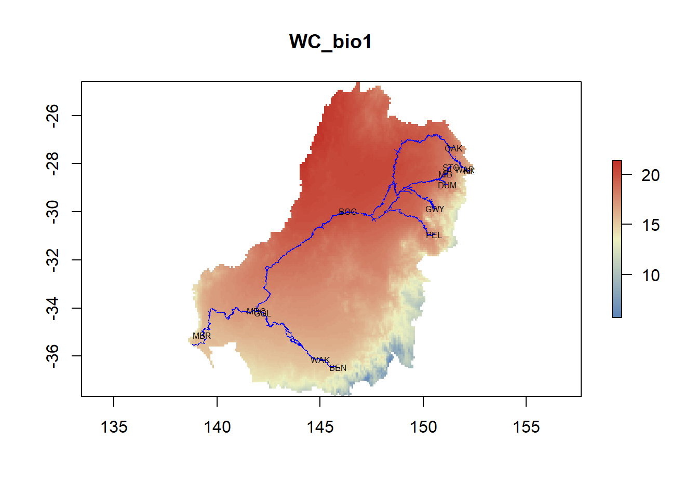
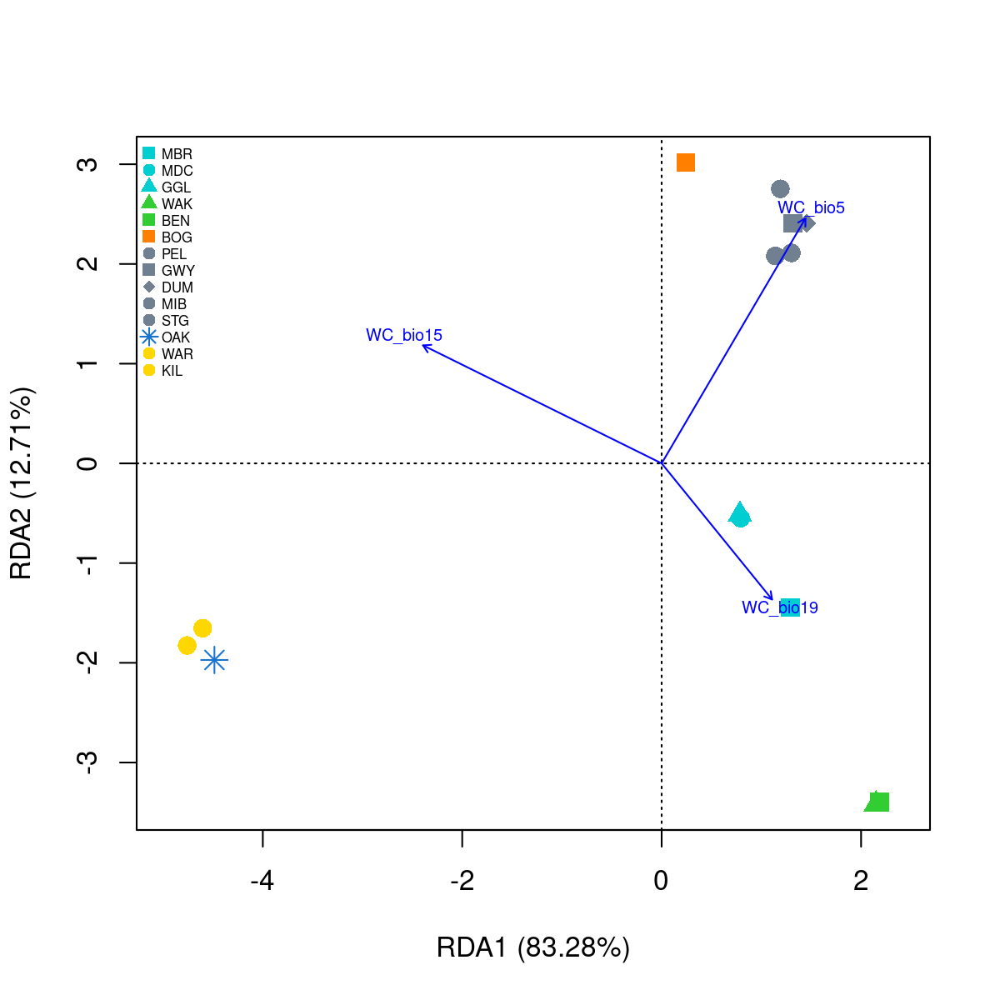
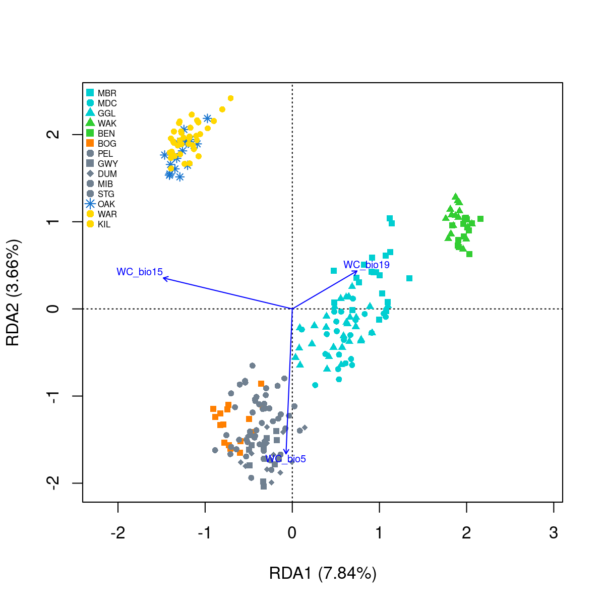

#devtools::install_github("pygmyperch/melfuR")
#BiocManager::install('qvalue')
library(adegenet)
library(LEA)
library(vegan)
library(fmsb)
library(psych)
library(dartRverse)
library(melfuR)
library(sdmpredictors)
library(sf)
library(raster)
library(robust)
library(qvalue)7 Natural Selection
Session Presenters
Required packages
make sure you have the packages installed, see Install dartRverse
GEA analysis of SNP and environmental data using RDA
First lets load in some functions we will be using.
source("utils.R")1. Data preparation
# load genlight object
load("data/Mf5000_gl.RData")
Mf5000_gl /// GENLIGHT OBJECT /////////
// 249 genotypes, 5,000 binary SNPs, size: 1.1 Mb
12917 (1.04 %) missing data
// Basic content
@gen: list of 249 SNPbin
@ploidy: ploidy of each individual (range: 2-2)
// Optional content
@ind.names: 249 individual labels
@loc.names: 5000 locus labels
@pop: population of each individual (group size range: 9-30)
@other: a list containing: X Mf5000_gl@pop [1] MBR MBR MBR MBR MBR MBR MBR MBR MBR MBR MBR MBR MBR MBR MBR MBR MBR MBR
[19] MBR MBR MDC MDC MDC MDC MDC MDC MDC MDC MDC MDC MDC MDC MDC MDC MDC MDC
[37] MDC MDC MDC MDC MDC MDC GGL GGL GGL GGL GGL GGL GGL GGL GGL GGL GGL GGL
[55] GGL GGL GGL GGL GGL GGL GGL GGL GGL GGL GGL GGL GGL GGL GGL GGL GGL GGL
[73] WAK WAK WAK WAK WAK WAK WAK WAK WAK WAK WAK WAK WAK WAK WAK WAK BEN BEN
[91] BEN BEN BEN BEN BEN BEN BEN BEN BEN BEN BEN BEN BOG BOG BOG BOG BOG BOG
[109] BOG BOG BOG BOG BOG BOG BOG BOG BOG BOG PEL PEL PEL PEL PEL PEL PEL PEL
[127] PEL GWY GWY GWY GWY GWY GWY GWY GWY GWY GWY GWY GWY DUM DUM DUM DUM DUM
[145] DUM DUM DUM DUM DUM DUM DUM DUM DUM MIB MIB MIB MIB MIB MIB MIB MIB MIB
[163] MIB MIB MIB MIB MIB MIB MIB MIB MIB MIB MIB STG STG STG STG STG STG STG
[181] STG STG STG STG STG STG STG STG STG STG STG STG STG OAK OAK OAK OAK OAK
[199] OAK OAK OAK OAK OAK OAK OAK OAK OAK OAK OAK OAK OAK WAR WAR WAR WAR WAR
[217] WAR WAR WAR WAR WAR WAR WAR WAR WAR WAR WAR WAR WAR WAR WAR KIL KIL KIL
[235] KIL KIL KIL KIL KIL KIL KIL KIL KIL KIL KIL KIL KIL KIL KIL
Levels: BEN BOG DUM GGL GWY KIL MBR MDC MIB OAK PEL STG WAK WAR# Factors in R can make you question your life choices like nothing else...
# re-order the pop levels to match the order of individuals in your data
Mf5000_gl@pop <- factor(Mf5000_gl@pop, levels = as.character(unique(Mf5000_gl@pop)))
Mf5000_gl@pop [1] MBR MBR MBR MBR MBR MBR MBR MBR MBR MBR MBR MBR MBR MBR MBR MBR MBR MBR
[19] MBR MBR MDC MDC MDC MDC MDC MDC MDC MDC MDC MDC MDC MDC MDC MDC MDC MDC
[37] MDC MDC MDC MDC MDC MDC GGL GGL GGL GGL GGL GGL GGL GGL GGL GGL GGL GGL
[55] GGL GGL GGL GGL GGL GGL GGL GGL GGL GGL GGL GGL GGL GGL GGL GGL GGL GGL
[73] WAK WAK WAK WAK WAK WAK WAK WAK WAK WAK WAK WAK WAK WAK WAK WAK BEN BEN
[91] BEN BEN BEN BEN BEN BEN BEN BEN BEN BEN BEN BEN BOG BOG BOG BOG BOG BOG
[109] BOG BOG BOG BOG BOG BOG BOG BOG BOG BOG PEL PEL PEL PEL PEL PEL PEL PEL
[127] PEL GWY GWY GWY GWY GWY GWY GWY GWY GWY GWY GWY GWY DUM DUM DUM DUM DUM
[145] DUM DUM DUM DUM DUM DUM DUM DUM DUM MIB MIB MIB MIB MIB MIB MIB MIB MIB
[163] MIB MIB MIB MIB MIB MIB MIB MIB MIB MIB MIB STG STG STG STG STG STG STG
[181] STG STG STG STG STG STG STG STG STG STG STG STG STG OAK OAK OAK OAK OAK
[199] OAK OAK OAK OAK OAK OAK OAK OAK OAK OAK OAK OAK OAK WAR WAR WAR WAR WAR
[217] WAR WAR WAR WAR WAR WAR WAR WAR WAR WAR WAR WAR WAR WAR WAR KIL KIL KIL
[235] KIL KIL KIL KIL KIL KIL KIL KIL KIL KIL KIL KIL KIL KIL KIL
Levels: MBR MDC GGL WAK BEN BOG PEL GWY DUM MIB STG OAK WAR KIL# convert to genind
Mf5000.genind <- gl2gi(Mf5000_gl)Starting gl2gi
Processing genlight object with SNP data
Matrix converted.. Prepare genind object...
Completed: gl2gi Mf5000.genind/// GENIND OBJECT /////////
// 249 individuals; 5,000 loci; 10,000 alleles; size: 12.2 Mb
// Basic content
@tab: 249 x 10000 matrix of allele counts
@loc.n.all: number of alleles per locus (range: 2-2)
@loc.fac: locus factor for the 10000 columns of @tab
@all.names: list of allele names for each locus
@ploidy: ploidy of each individual (range: 2-2)
@type: codom
@call: df2genind(X = xx[, ], sep = "/", ncode = 1, ind.names = x@ind.names,
pop = x@pop, NA.char = "-", ploidy = 2)
// Optional content
@pop: population of each individual (group size range: 9-30)
@other: a list containing: X
Ordination analyses cannot handle missing data…
Impute missing data
Decision time
remove loci with missing data?
remove individuals with missing data?
impute missing data, ok how?
3a. most common genotype across all data?
3b. most common genotype per site/population/other?
3c. based on population allele frequencies characterised using snmf (admixture)?
# ADMIXTURE results most likely 6 pops
imputed.gi <- melfuR::impute.data(Mf5000.genind, K = 6)Total missing data = 1.04 %
[1] "*********************************************************"
[1] " Conversion from the lfmm format to the geno format"
[1] "*********************************************************"
- number of detected individuals: 249
- number of detected loci: 5000
The project is saved into :
dat.snmfProject
To load the project, use:
project = load.snmfProject("dat.snmfProject")
To remove the project, use:
remove.snmfProject("dat.snmfProject")
[1] 42
[1] "*************************************"
[1] "* create.dataset *"
[1] "*************************************"
summary of the options:
-n (number of individuals) 249
-L (number of loci) 5000
-s (seed random init) 42
-r (percentage of masked data) 0.05
-x (genotype file in .geno format) C:\repositories\dartR_workshop\kioloa\dat.geno
-o (output file in .geno format) C:/repositories/dartR_workshop/kioloa/dat.snmf/masked/dat_I.geno
Write genotype file with masked data, C:/repositories/dartR_workshop/kioloa/dat.snmf/masked/dat_I.geno: OK.
[1] "*************************************"
[1] "* sNMF K = 6 repetition 1 *"
[1] "*************************************"
summary of the options:
-n (number of individuals) 249
-L (number of loci) 5000
-K (number of ancestral pops) 6
-x (input file) C:/repositories/dartR_workshop/kioloa/dat.snmf/masked/dat_I.geno
-q (individual admixture file) C:/repositories/dartR_workshop/kioloa/dat.snmf/K6/run1/dat_r1.6.Q
-g (ancestral frequencies file) C:/repositories/dartR_workshop/kioloa/dat.snmf/K6/run1/dat_r1.6.G
-i (number max of iterations) 200
-a (regularization parameter) 10
-s (seed random init) 42
-e (tolerance error) 1E-05
-p (number of processes) 1
- diploid
Read genotype file C:/repositories/dartR_workshop/kioloa/dat.snmf/masked/dat_I.geno: OK.
Main algorithm:
[ ]
[=====================================]
Number of iterations: 98
Least-square error: 388910.818678
Write individual ancestry coefficient file C:/repositories/dartR_workshop/kioloa/dat.snmf/K6/run1/dat_r1.6.Q: OK.
Write ancestral allele frequency coefficient file C:/repositories/dartR_workshop/kioloa/dat.snmf/K6/run1/dat_r1.6.G: OK.
[1] "*************************************"
[1] "* cross-entropy estimation *"
[1] "*************************************"
summary of the options:
-n (number of individuals) 249
-L (number of loci) 5000
-K (number of ancestral pops) 6
-x (genotype file) C:\repositories\dartR_workshop\kioloa\dat.geno
-q (individual admixture) C:/repositories/dartR_workshop/kioloa/dat.snmf/K6/run1/dat_r1.6.Q
-g (ancestral frequencies) C:/repositories/dartR_workshop/kioloa/dat.snmf/K6/run1/dat_r1.6.G
-i (with masked genotypes) C:/repositories/dartR_workshop/kioloa/dat.snmf/masked/dat_I.geno
- diploid
Cross-Entropy (all data): 0.515314
Cross-Entropy (masked data): 0.550054
The project is saved into :
dat.snmfProject
To load the project, use:
project = load.snmfProject("dat.snmfProject")
To remove the project, use:
remove.snmfProject("dat.snmfProject")
[1] 2036314816
[1] "*************************************"
[1] "* create.dataset *"
[1] "*************************************"
summary of the options:
-n (number of individuals) 249
-L (number of loci) 5000
-s (seed random init) 2036314816
-r (percentage of masked data) 0.05
-x (genotype file in .geno format) C:\repositories\dartR_workshop\kioloa\dat.geno
-o (output file in .geno format) C:/repositories/dartR_workshop/kioloa/dat.snmf/masked/dat_I.geno
Write genotype file with masked data, C:/repositories/dartR_workshop/kioloa/dat.snmf/masked/dat_I.geno: OK.
[1] "*************************************"
[1] "* sNMF K = 6 repetition 2 *"
[1] "*************************************"
summary of the options:
-n (number of individuals) 249
-L (number of loci) 5000
-K (number of ancestral pops) 6
-x (input file) C:/repositories/dartR_workshop/kioloa/dat.snmf/masked/dat_I.geno
-q (individual admixture file) C:/repositories/dartR_workshop/kioloa/dat.snmf/K6/run2/dat_r2.6.Q
-g (ancestral frequencies file) C:/repositories/dartR_workshop/kioloa/dat.snmf/K6/run2/dat_r2.6.G
-i (number max of iterations) 200
-a (regularization parameter) 10
-s (seed random init) 2036314816
-e (tolerance error) 1E-05
-p (number of processes) 1
- diploid
Read genotype file C:/repositories/dartR_workshop/kioloa/dat.snmf/masked/dat_I.geno: OK.
Main algorithm:
[ ]
[======================================]
Number of iterations: 102
Least-square error: 390122.868041
Write individual ancestry coefficient file C:/repositories/dartR_workshop/kioloa/dat.snmf/K6/run2/dat_r2.6.Q: OK.
Write ancestral allele frequency coefficient file C:/repositories/dartR_workshop/kioloa/dat.snmf/K6/run2/dat_r2.6.G: OK.
[1] "*************************************"
[1] "* cross-entropy estimation *"
[1] "*************************************"
summary of the options:
-n (number of individuals) 249
-L (number of loci) 5000
-K (number of ancestral pops) 6
-x (genotype file) C:\repositories\dartR_workshop\kioloa\dat.geno
-q (individual admixture) C:/repositories/dartR_workshop/kioloa/dat.snmf/K6/run2/dat_r2.6.Q
-g (ancestral frequencies) C:/repositories/dartR_workshop/kioloa/dat.snmf/K6/run2/dat_r2.6.G
-i (with masked genotypes) C:/repositories/dartR_workshop/kioloa/dat.snmf/masked/dat_I.geno
- diploid
Cross-Entropy (all data): 0.51454
Cross-Entropy (masked data): 0.558075
The project is saved into :
dat.snmfProject
To load the project, use:
project = load.snmfProject("dat.snmfProject")
To remove the project, use:
remove.snmfProject("dat.snmfProject")
[1] 1372102712
[1] "*************************************"
[1] "* create.dataset *"
[1] "*************************************"
summary of the options:
-n (number of individuals) 249
-L (number of loci) 5000
-s (seed random init) 1372102712
-r (percentage of masked data) 0.05
-x (genotype file in .geno format) C:\repositories\dartR_workshop\kioloa\dat.geno
-o (output file in .geno format) C:/repositories/dartR_workshop/kioloa/dat.snmf/masked/dat_I.geno
Write genotype file with masked data, C:/repositories/dartR_workshop/kioloa/dat.snmf/masked/dat_I.geno: OK.
[1] "*************************************"
[1] "* sNMF K = 6 repetition 3 *"
[1] "*************************************"
summary of the options:
-n (number of individuals) 249
-L (number of loci) 5000
-K (number of ancestral pops) 6
-x (input file) C:/repositories/dartR_workshop/kioloa/dat.snmf/masked/dat_I.geno
-q (individual admixture file) C:/repositories/dartR_workshop/kioloa/dat.snmf/K6/run3/dat_r3.6.Q
-g (ancestral frequencies file) C:/repositories/dartR_workshop/kioloa/dat.snmf/K6/run3/dat_r3.6.G
-i (number max of iterations) 200
-a (regularization parameter) 10
-s (seed random init) 1372102712
-e (tolerance error) 1E-05
-p (number of processes) 1
- diploid
Read genotype file C:/repositories/dartR_workshop/kioloa/dat.snmf/masked/dat_I.geno: OK.
Main algorithm:
[ ]
[=====================================]
Number of iterations: 98
Least-square error: 390123.414335
Write individual ancestry coefficient file C:/repositories/dartR_workshop/kioloa/dat.snmf/K6/run3/dat_r3.6.Q: OK.
Write ancestral allele frequency coefficient file C:/repositories/dartR_workshop/kioloa/dat.snmf/K6/run3/dat_r3.6.G: OK.
[1] "*************************************"
[1] "* cross-entropy estimation *"
[1] "*************************************"
summary of the options:
-n (number of individuals) 249
-L (number of loci) 5000
-K (number of ancestral pops) 6
-x (genotype file) C:\repositories\dartR_workshop\kioloa\dat.geno
-q (individual admixture) C:/repositories/dartR_workshop/kioloa/dat.snmf/K6/run3/dat_r3.6.Q
-g (ancestral frequencies) C:/repositories/dartR_workshop/kioloa/dat.snmf/K6/run3/dat_r3.6.G
-i (with masked genotypes) C:/repositories/dartR_workshop/kioloa/dat.snmf/masked/dat_I.geno
- diploid
Cross-Entropy (all data): 0.515192
Cross-Entropy (masked data): 0.546855
The project is saved into :
dat.snmfProject
To load the project, use:
project = load.snmfProject("dat.snmfProject")
To remove the project, use:
remove.snmfProject("dat.snmfProject")
[1] 501538892
[1] "*************************************"
[1] "* create.dataset *"
[1] "*************************************"
summary of the options:
-n (number of individuals) 249
-L (number of loci) 5000
-s (seed random init) 501538892
-r (percentage of masked data) 0.05
-x (genotype file in .geno format) C:\repositories\dartR_workshop\kioloa\dat.geno
-o (output file in .geno format) C:/repositories/dartR_workshop/kioloa/dat.snmf/masked/dat_I.geno
Write genotype file with masked data, C:/repositories/dartR_workshop/kioloa/dat.snmf/masked/dat_I.geno: OK.
[1] "*************************************"
[1] "* sNMF K = 6 repetition 4 *"
[1] "*************************************"
summary of the options:
-n (number of individuals) 249
-L (number of loci) 5000
-K (number of ancestral pops) 6
-x (input file) C:/repositories/dartR_workshop/kioloa/dat.snmf/masked/dat_I.geno
-q (individual admixture file) C:/repositories/dartR_workshop/kioloa/dat.snmf/K6/run4/dat_r4.6.Q
-g (ancestral frequencies file) C:/repositories/dartR_workshop/kioloa/dat.snmf/K6/run4/dat_r4.6.G
-i (number max of iterations) 200
-a (regularization parameter) 10
-s (seed random init) 501538892
-e (tolerance error) 1E-05
-p (number of processes) 1
- diploid
Read genotype file C:/repositories/dartR_workshop/kioloa/dat.snmf/masked/dat_I.geno: OK.
Main algorithm:
[ ]
[==================================]
Number of iterations: 92
Least-square error: 389969.387848
Write individual ancestry coefficient file C:/repositories/dartR_workshop/kioloa/dat.snmf/K6/run4/dat_r4.6.Q: OK.
Write ancestral allele frequency coefficient file C:/repositories/dartR_workshop/kioloa/dat.snmf/K6/run4/dat_r4.6.G: OK.
[1] "*************************************"
[1] "* cross-entropy estimation *"
[1] "*************************************"
summary of the options:
-n (number of individuals) 249
-L (number of loci) 5000
-K (number of ancestral pops) 6
-x (genotype file) C:\repositories\dartR_workshop\kioloa\dat.geno
-q (individual admixture) C:/repositories/dartR_workshop/kioloa/dat.snmf/K6/run4/dat_r4.6.Q
-g (ancestral frequencies) C:/repositories/dartR_workshop/kioloa/dat.snmf/K6/run4/dat_r4.6.G
-i (with masked genotypes) C:/repositories/dartR_workshop/kioloa/dat.snmf/masked/dat_I.geno
- diploid
Cross-Entropy (all data): 0.514871
Cross-Entropy (masked data): 0.554227
The project is saved into :
dat.snmfProject
To load the project, use:
project = load.snmfProject("dat.snmfProject")
To remove the project, use:
remove.snmfProject("dat.snmfProject")
[1] 1497835296
[1] "*************************************"
[1] "* create.dataset *"
[1] "*************************************"
summary of the options:
-n (number of individuals) 249
-L (number of loci) 5000
-s (seed random init) 1497835296
-r (percentage of masked data) 0.05
-x (genotype file in .geno format) C:\repositories\dartR_workshop\kioloa\dat.geno
-o (output file in .geno format) C:/repositories/dartR_workshop/kioloa/dat.snmf/masked/dat_I.geno
Write genotype file with masked data, C:/repositories/dartR_workshop/kioloa/dat.snmf/masked/dat_I.geno: OK.
[1] "*************************************"
[1] "* sNMF K = 6 repetition 5 *"
[1] "*************************************"
summary of the options:
-n (number of individuals) 249
-L (number of loci) 5000
-K (number of ancestral pops) 6
-x (input file) C:/repositories/dartR_workshop/kioloa/dat.snmf/masked/dat_I.geno
-q (individual admixture file) C:/repositories/dartR_workshop/kioloa/dat.snmf/K6/run5/dat_r5.6.Q
-g (ancestral frequencies file) C:/repositories/dartR_workshop/kioloa/dat.snmf/K6/run5/dat_r5.6.G
-i (number max of iterations) 200
-a (regularization parameter) 10
-s (seed random init) 1497835296
-e (tolerance error) 1E-05
-p (number of processes) 1
- diploid
Read genotype file C:/repositories/dartR_workshop/kioloa/dat.snmf/masked/dat_I.geno: OK.
Main algorithm:
[ ]
[=======================================]
Number of iterations: 105
Least-square error: 390133.766506
Write individual ancestry coefficient file C:/repositories/dartR_workshop/kioloa/dat.snmf/K6/run5/dat_r5.6.Q: OK.
Write ancestral allele frequency coefficient file C:/repositories/dartR_workshop/kioloa/dat.snmf/K6/run5/dat_r5.6.G: OK.
[1] "*************************************"
[1] "* cross-entropy estimation *"
[1] "*************************************"
summary of the options:
-n (number of individuals) 249
-L (number of loci) 5000
-K (number of ancestral pops) 6
-x (genotype file) C:\repositories\dartR_workshop\kioloa\dat.geno
-q (individual admixture) C:/repositories/dartR_workshop/kioloa/dat.snmf/K6/run5/dat_r5.6.Q
-g (ancestral frequencies) C:/repositories/dartR_workshop/kioloa/dat.snmf/K6/run5/dat_r5.6.G
-i (with masked genotypes) C:/repositories/dartR_workshop/kioloa/dat.snmf/masked/dat_I.geno
- diploid
Cross-Entropy (all data): 0.515216
Cross-Entropy (masked data): 0.547343
The project is saved into :
dat.snmfProject
To load the project, use:
project = load.snmfProject("dat.snmfProject")
To remove the project, use:
remove.snmfProject("dat.snmfProject")
[1] 2046585485
[1] "*************************************"
[1] "* create.dataset *"
[1] "*************************************"
summary of the options:
-n (number of individuals) 249
-L (number of loci) 5000
-s (seed random init) 2046585485
-r (percentage of masked data) 0.05
-x (genotype file in .geno format) C:\repositories\dartR_workshop\kioloa\dat.geno
-o (output file in .geno format) C:/repositories/dartR_workshop/kioloa/dat.snmf/masked/dat_I.geno
Write genotype file with masked data, C:/repositories/dartR_workshop/kioloa/dat.snmf/masked/dat_I.geno: OK.
[1] "*************************************"
[1] "* sNMF K = 6 repetition 6 *"
[1] "*************************************"
summary of the options:
-n (number of individuals) 249
-L (number of loci) 5000
-K (number of ancestral pops) 6
-x (input file) C:/repositories/dartR_workshop/kioloa/dat.snmf/masked/dat_I.geno
-q (individual admixture file) C:/repositories/dartR_workshop/kioloa/dat.snmf/K6/run6/dat_r6.6.Q
-g (ancestral frequencies file) C:/repositories/dartR_workshop/kioloa/dat.snmf/K6/run6/dat_r6.6.G
-i (number max of iterations) 200
-a (regularization parameter) 10
-s (seed random init) 2046585485
-e (tolerance error) 1E-05
-p (number of processes) 1
- diploid
Read genotype file C:/repositories/dartR_workshop/kioloa/dat.snmf/masked/dat_I.geno: OK.
Main algorithm:
[ ]
[==================================================]
Number of iterations: 133
Least-square error: 388974.296211
Write individual ancestry coefficient file C:/repositories/dartR_workshop/kioloa/dat.snmf/K6/run6/dat_r6.6.Q: OK.
Write ancestral allele frequency coefficient file C:/repositories/dartR_workshop/kioloa/dat.snmf/K6/run6/dat_r6.6.G: OK.
[1] "*************************************"
[1] "* cross-entropy estimation *"
[1] "*************************************"
summary of the options:
-n (number of individuals) 249
-L (number of loci) 5000
-K (number of ancestral pops) 6
-x (genotype file) C:\repositories\dartR_workshop\kioloa\dat.geno
-q (individual admixture) C:/repositories/dartR_workshop/kioloa/dat.snmf/K6/run6/dat_r6.6.Q
-g (ancestral frequencies) C:/repositories/dartR_workshop/kioloa/dat.snmf/K6/run6/dat_r6.6.G
-i (with masked genotypes) C:/repositories/dartR_workshop/kioloa/dat.snmf/masked/dat_I.geno
- diploid
Cross-Entropy (all data): 0.515075
Cross-Entropy (masked data): 0.55581
The project is saved into :
dat.snmfProject
To load the project, use:
project = load.snmfProject("dat.snmfProject")
To remove the project, use:
remove.snmfProject("dat.snmfProject")
[1] 1629520877
[1] "*************************************"
[1] "* create.dataset *"
[1] "*************************************"
summary of the options:
-n (number of individuals) 249
-L (number of loci) 5000
-s (seed random init) 1629520877
-r (percentage of masked data) 0.05
-x (genotype file in .geno format) C:\repositories\dartR_workshop\kioloa\dat.geno
-o (output file in .geno format) C:/repositories/dartR_workshop/kioloa/dat.snmf/masked/dat_I.geno
Write genotype file with masked data, C:/repositories/dartR_workshop/kioloa/dat.snmf/masked/dat_I.geno: OK.
[1] "*************************************"
[1] "* sNMF K = 6 repetition 7 *"
[1] "*************************************"
summary of the options:
-n (number of individuals) 249
-L (number of loci) 5000
-K (number of ancestral pops) 6
-x (input file) C:/repositories/dartR_workshop/kioloa/dat.snmf/masked/dat_I.geno
-q (individual admixture file) C:/repositories/dartR_workshop/kioloa/dat.snmf/K6/run7/dat_r7.6.Q
-g (ancestral frequencies file) C:/repositories/dartR_workshop/kioloa/dat.snmf/K6/run7/dat_r7.6.G
-i (number max of iterations) 200
-a (regularization parameter) 10
-s (seed random init) 1629520877
-e (tolerance error) 1E-05
-p (number of processes) 1
- diploid
Read genotype file C:/repositories/dartR_workshop/kioloa/dat.snmf/masked/dat_I.geno: OK.
Main algorithm:
[ ]
[=========]
Number of iterations: 23
Least-square error: 390786.553313
Write individual ancestry coefficient file C:/repositories/dartR_workshop/kioloa/dat.snmf/K6/run7/dat_r7.6.Q: OK.
Write ancestral allele frequency coefficient file C:/repositories/dartR_workshop/kioloa/dat.snmf/K6/run7/dat_r7.6.G: OK.
[1] "*************************************"
[1] "* cross-entropy estimation *"
[1] "*************************************"
summary of the options:
-n (number of individuals) 249
-L (number of loci) 5000
-K (number of ancestral pops) 6
-x (genotype file) C:\repositories\dartR_workshop\kioloa\dat.geno
-q (individual admixture) C:/repositories/dartR_workshop/kioloa/dat.snmf/K6/run7/dat_r7.6.Q
-g (ancestral frequencies) C:/repositories/dartR_workshop/kioloa/dat.snmf/K6/run7/dat_r7.6.G
-i (with masked genotypes) C:/repositories/dartR_workshop/kioloa/dat.snmf/masked/dat_I.geno
- diploid
Cross-Entropy (all data): 0.518724
Cross-Entropy (masked data): 0.559747
The project is saved into :
dat.snmfProject
To load the project, use:
project = load.snmfProject("dat.snmfProject")
To remove the project, use:
remove.snmfProject("dat.snmfProject")
[1] 1792160697
[1] "*************************************"
[1] "* create.dataset *"
[1] "*************************************"
summary of the options:
-n (number of individuals) 249
-L (number of loci) 5000
-s (seed random init) 1792160697
-r (percentage of masked data) 0.05
-x (genotype file in .geno format) C:\repositories\dartR_workshop\kioloa\dat.geno
-o (output file in .geno format) C:/repositories/dartR_workshop/kioloa/dat.snmf/masked/dat_I.geno
Write genotype file with masked data, C:/repositories/dartR_workshop/kioloa/dat.snmf/masked/dat_I.geno: OK.
[1] "*************************************"
[1] "* sNMF K = 6 repetition 8 *"
[1] "*************************************"
summary of the options:
-n (number of individuals) 249
-L (number of loci) 5000
-K (number of ancestral pops) 6
-x (input file) C:/repositories/dartR_workshop/kioloa/dat.snmf/masked/dat_I.geno
-q (individual admixture file) C:/repositories/dartR_workshop/kioloa/dat.snmf/K6/run8/dat_r8.6.Q
-g (ancestral frequencies file) C:/repositories/dartR_workshop/kioloa/dat.snmf/K6/run8/dat_r8.6.G
-i (number max of iterations) 200
-a (regularization parameter) 10
-s (seed random init) 1792160697
-e (tolerance error) 1E-05
-p (number of processes) 1
- diploid
Read genotype file C:/repositories/dartR_workshop/kioloa/dat.snmf/masked/dat_I.geno: OK.
Main algorithm:
[ ]
[=====================================================]
Number of iterations: 141
Least-square error: 389482.108053
Write individual ancestry coefficient file C:/repositories/dartR_workshop/kioloa/dat.snmf/K6/run8/dat_r8.6.Q: OK.
Write ancestral allele frequency coefficient file C:/repositories/dartR_workshop/kioloa/dat.snmf/K6/run8/dat_r8.6.G: OK.
[1] "*************************************"
[1] "* cross-entropy estimation *"
[1] "*************************************"
summary of the options:
-n (number of individuals) 249
-L (number of loci) 5000
-K (number of ancestral pops) 6
-x (genotype file) C:\repositories\dartR_workshop\kioloa\dat.geno
-q (individual admixture) C:/repositories/dartR_workshop/kioloa/dat.snmf/K6/run8/dat_r8.6.Q
-g (ancestral frequencies) C:/repositories/dartR_workshop/kioloa/dat.snmf/K6/run8/dat_r8.6.G
-i (with masked genotypes) C:/repositories/dartR_workshop/kioloa/dat.snmf/masked/dat_I.geno
- diploid
Cross-Entropy (all data): 0.515373
Cross-Entropy (masked data): 0.552094
The project is saved into :
dat.snmfProject
To load the project, use:
project = load.snmfProject("dat.snmfProject")
To remove the project, use:
remove.snmfProject("dat.snmfProject")
[1] 1478357482
[1] "*************************************"
[1] "* create.dataset *"
[1] "*************************************"
summary of the options:
-n (number of individuals) 249
-L (number of loci) 5000
-s (seed random init) 1478357482
-r (percentage of masked data) 0.05
-x (genotype file in .geno format) C:\repositories\dartR_workshop\kioloa\dat.geno
-o (output file in .geno format) C:/repositories/dartR_workshop/kioloa/dat.snmf/masked/dat_I.geno
Write genotype file with masked data, C:/repositories/dartR_workshop/kioloa/dat.snmf/masked/dat_I.geno: OK.
[1] "*************************************"
[1] "* sNMF K = 6 repetition 9 *"
[1] "*************************************"
summary of the options:
-n (number of individuals) 249
-L (number of loci) 5000
-K (number of ancestral pops) 6
-x (input file) C:/repositories/dartR_workshop/kioloa/dat.snmf/masked/dat_I.geno
-q (individual admixture file) C:/repositories/dartR_workshop/kioloa/dat.snmf/K6/run9/dat_r9.6.Q
-g (ancestral frequencies file) C:/repositories/dartR_workshop/kioloa/dat.snmf/K6/run9/dat_r9.6.G
-i (number max of iterations) 200
-a (regularization parameter) 10
-s (seed random init) 1478357482
-e (tolerance error) 1E-05
-p (number of processes) 1
- diploid
Read genotype file C:/repositories/dartR_workshop/kioloa/dat.snmf/masked/dat_I.geno: OK.
Main algorithm:
[ ]
[==================================================]
Number of iterations: 134
Least-square error: 389483.213088
Write individual ancestry coefficient file C:/repositories/dartR_workshop/kioloa/dat.snmf/K6/run9/dat_r9.6.Q: OK.
Write ancestral allele frequency coefficient file C:/repositories/dartR_workshop/kioloa/dat.snmf/K6/run9/dat_r9.6.G: OK.
[1] "*************************************"
[1] "* cross-entropy estimation *"
[1] "*************************************"
summary of the options:
-n (number of individuals) 249
-L (number of loci) 5000
-K (number of ancestral pops) 6
-x (genotype file) C:\repositories\dartR_workshop\kioloa\dat.geno
-q (individual admixture) C:/repositories/dartR_workshop/kioloa/dat.snmf/K6/run9/dat_r9.6.Q
-g (ancestral frequencies) C:/repositories/dartR_workshop/kioloa/dat.snmf/K6/run9/dat_r9.6.G
-i (with masked genotypes) C:/repositories/dartR_workshop/kioloa/dat.snmf/masked/dat_I.geno
- diploid
Cross-Entropy (all data): 0.51554
Cross-Entropy (masked data): 0.549863
The project is saved into :
dat.snmfProject
To load the project, use:
project = load.snmfProject("dat.snmfProject")
To remove the project, use:
remove.snmfProject("dat.snmfProject")
[1] 1849722938
[1] "*************************************"
[1] "* create.dataset *"
[1] "*************************************"
summary of the options:
-n (number of individuals) 249
-L (number of loci) 5000
-s (seed random init) 1849722938
-r (percentage of masked data) 0.05
-x (genotype file in .geno format) C:\repositories\dartR_workshop\kioloa\dat.geno
-o (output file in .geno format) C:/repositories/dartR_workshop/kioloa/dat.snmf/masked/dat_I.geno
Write genotype file with masked data, C:/repositories/dartR_workshop/kioloa/dat.snmf/masked/dat_I.geno: OK.
[1] "*************************************"
[1] "* sNMF K = 6 repetition 10 *"
[1] "*************************************"
summary of the options:
-n (number of individuals) 249
-L (number of loci) 5000
-K (number of ancestral pops) 6
-x (input file) C:/repositories/dartR_workshop/kioloa/dat.snmf/masked/dat_I.geno
-q (individual admixture file) C:/repositories/dartR_workshop/kioloa/dat.snmf/K6/run10/dat_r10.6.Q
-g (ancestral frequencies file) C:/repositories/dartR_workshop/kioloa/dat.snmf/K6/run10/dat_r10.6.G
-i (number max of iterations) 200
-a (regularization parameter) 10
-s (seed random init) 1849722938
-e (tolerance error) 1E-05
-p (number of processes) 1
- diploid
Read genotype file C:/repositories/dartR_workshop/kioloa/dat.snmf/masked/dat_I.geno: OK.
Main algorithm:
[ ]
[=================================]
Number of iterations: 87
Least-square error: 389102.635227
Write individual ancestry coefficient file C:/repositories/dartR_workshop/kioloa/dat.snmf/K6/run10/dat_r10.6.Q: OK.
Write ancestral allele frequency coefficient file C:/repositories/dartR_workshop/kioloa/dat.snmf/K6/run10/dat_r10.6.G: OK.
[1] "*************************************"
[1] "* cross-entropy estimation *"
[1] "*************************************"
summary of the options:
-n (number of individuals) 249
-L (number of loci) 5000
-K (number of ancestral pops) 6
-x (genotype file) C:\repositories\dartR_workshop\kioloa\dat.geno
-q (individual admixture) C:/repositories/dartR_workshop/kioloa/dat.snmf/K6/run10/dat_r10.6.Q
-g (ancestral frequencies) C:/repositories/dartR_workshop/kioloa/dat.snmf/K6/run10/dat_r10.6.G
-i (with masked genotypes) C:/repositories/dartR_workshop/kioloa/dat.snmf/masked/dat_I.geno
- diploid
Cross-Entropy (all data): 0.515332
Cross-Entropy (masked data): 0.550284
The project is saved into :
dat.snmfProject
To load the project, use:
project = load.snmfProject("dat.snmfProject")
To remove the project, use:
remove.snmfProject("dat.snmfProject")
Missing genotype imputation for K = 6
Missing genotype imputation for run = 3
Results are written in the file: dat.lfmm_imputed.lfmm
Total missing data was = 1.04 %
Total missing data now = 0 %# order major/minor alleles (generally no reason to do this... but might be useful for someone)
imputed.sorted.gi <- sort_alleles(imputed.gi)
# check results
imputed.gi@tab[1:10,1:6] SNP_1.C SNP_1.G SNP_2.A SNP_2.T SNP_3.T SNP_3.A
MBR_10 1 1 1 1 2 0
MBR_11 1 1 1 1 2 0
MBR_12 1 1 2 0 2 0
MBR_14 0 2 2 0 2 0
MBR_15 0 2 1 1 2 0
MBR_16 0 2 2 0 2 0
MBR_17 0 2 0 2 2 0
MBR_18 0 2 1 1 2 0
MBR_19 1 1 2 0 2 0
MBR_1 0 2 1 1 2 0imputed.sorted.gi@tab[1:10,1:6] SNP_1.G SNP_1.C SNP_2.A SNP_2.T SNP_3.T SNP_3.A
MBR_10 1 1 1 1 2 0
MBR_11 1 1 1 1 2 0
MBR_12 1 1 2 0 2 0
MBR_14 2 0 2 0 2 0
MBR_15 2 0 1 1 2 0
MBR_16 2 0 2 0 2 0
MBR_17 2 0 0 2 2 0
MBR_18 2 0 1 1 2 0
MBR_19 1 1 2 0 2 0
MBR_1 2 0 1 1 2 0Format SNP data for ordination analysis in vegan. You want a matrix of allele counts per locus, per individual can use population allele frequencies instead
Individual based
# for individual based analyses
# get allele counts
alleles <- imputed.sorted.gi@tab
# get genotypes (counts of reference allele) and clean up locus names
snps <- alleles[,seq(1,ncol(alleles),2)]
colnames(snps) <- locNames(imputed.sorted.gi)
snps[1:10,1:10] SNP_1 SNP_2 SNP_3 SNP_4 SNP_5 SNP_6 SNP_7 SNP_8 SNP_9 SNP_10
MBR_10 1 1 2 2 2 2 1 1 2 1
MBR_11 1 1 2 2 2 2 2 2 2 0
MBR_12 1 2 2 2 2 1 2 2 2 1
MBR_14 2 2 2 2 2 2 1 1 2 2
MBR_15 2 1 2 2 2 2 1 1 2 2
MBR_16 2 2 2 2 2 2 2 2 2 2
MBR_17 2 0 2 2 2 2 0 2 2 2
MBR_18 2 1 2 2 2 1 1 2 2 0
MBR_19 1 2 2 2 2 1 2 2 2 2
MBR_1 2 1 2 2 1 2 2 2 2 2# Alternative: impute missing data with most common genotype across all data
# alleles <- Mf5000.genind@tab
# snps <- alleles[,seq(1,ncol(alleles),2)]
# colnames(snps) <- locNames(Mf5000.genind)
# snps <- apply(snps, 2, function(x) replace(x, is.na(x), as.numeric(names(which.max(table(x))))))
# check total % missing data
# (sum(is.na(snps)))/(dim(snps)[1]*dim(snps)[2])*100Population based
# for population based analyses
# get pop allele frequencies
gp <- genind2genpop(imputed.sorted.gi)
Converting data from a genind to a genpop object...
...done.AF <- makefreq(gp)
Finding allelic frequencies from a genpop object...
...done.# drop one (redundant) allele per locus
AF <- AF[,seq(1,ncol(AF),2)]
colnames(AF) <- locNames(gp)
rownames(AF) <- levels(imputed.sorted.gi@pop)
AF[1:14,1:6] SNP_1 SNP_2 SNP_3 SNP_4 SNP_5 SNP_6
MBR 0.87500000 0.8250000 0.9750000 1.0000000 0.9750000 0.8250000
MDC 0.70454545 0.7045455 0.8409091 0.9545455 0.8863636 0.8181818
GGL 0.71666667 0.7833333 0.9000000 0.9166667 0.8500000 0.8000000
WAK 0.93750000 1.0000000 1.0000000 1.0000000 1.0000000 0.3125000
BEN 0.92857143 1.0000000 1.0000000 1.0000000 1.0000000 0.6071429
BOG 0.75000000 0.8125000 0.7812500 1.0000000 0.7812500 0.9062500
PEL 0.83333333 0.7222222 0.9444444 0.9444444 0.8888889 1.0000000
GWY 0.75000000 0.9166667 1.0000000 1.0000000 1.0000000 0.8333333
DUM 0.82142857 1.0000000 0.9285714 0.9285714 1.0000000 0.8571429
MIB 0.92500000 0.7750000 0.9250000 0.8250000 0.9750000 0.8500000
STG 0.97500000 0.8750000 0.6500000 0.8000000 1.0000000 0.8000000
OAK 0.02777778 0.6388889 0.6388889 0.6666667 0.3333333 1.0000000
WAR 0.20000000 0.9000000 0.7000000 0.5750000 0.2750000 1.0000000
KIL 0.25000000 0.7777778 0.5277778 0.7222222 0.3055556 1.0000000Get environmental data
Decision time:
What are the variables you want to use? Considerations: Prior/expert knowledge, hypotheses, species distribution models (SDMs), most important variables, data availability, think about surrogates/proxies if specific data not available, raw variables, PCA, other transformations?
In this case we are going to keep it simple and just use a few WorldClim variables Bio01 (annual mean temperature), Bio05 (temperature in hottest month), Bio15 (rainfall seasonality) and Bio19 (rainfall in coldest quarter)
# set the data dir and extend the waiting time (sometimes the database can be slow to respond)
options(sdmpredictors_datadir="data/spatial_data")
options(timeout = max(300, getOption("timeout")))
# Explore datasets in the package
sdmpredictors::list_datasets() dataset_code terrestrial marine url
1 WorldClim TRUE FALSE http://www.worldclim.org/
2 Bio-ORACLE FALSE TRUE https://bio-oracle.org/
3 MARSPEC FALSE TRUE http://marspec.org/
4 ENVIREM TRUE FALSE https://envirem.github.io/
5 Freshwater TRUE FALSE https://www.earthenv.org/streams
description
1 WorldClim is a set of global climate layers (climate grids). Note that all data has been transformed back to real values, so there is no need to e.g. divide temperature layers by 10.
2 Bio-ORACLE is a set of GIS rasters providing geophysical, biotic and environmental data for surface and benthic marine realms at a spatial resolution 5 arcmin (9.2 km) in the ESRI ascii and tif format.
3 MARSPEC is a set of high resolution climatic and geophysical GIS data layers for the world ocean. Seven geophysical variables were derived from the SRTM30_PLUS high resolution bathymetry dataset. These layers characterize the horizontal orientation (aspect), slope, and curvature of the seafloor and the distance from shore. Ten "bioclimatic" variables were derived from NOAA's World Ocean Atlas and NASA's MODIS satellite imagery and characterize the inter-annual means, extremes, and variances in sea surface temperature and salinity. These variables will be useful to those interested in the spatial ecology of marine shallow-water and surface-associated pelagic organisms across the globe. Note that, in contrary to the original MARSPEC, all layers have unscaled values.
4 The ENVIREM dataset is a set of 16 climatic and 2 topographic variables that can be used in modeling species' distributions. The strengths of this dataset include their close ties to ecological processes, and their availability at a global scale, at several spatial resolutions, and for several time periods. The underlying temperature and precipitation data that went into their construction comes from the WorldClim dataset (www.worldclim.org), and the solar radiation data comes from the Consortium for Spatial Information (www.cgiar-csi.org). The data are compatible with and expand the set of variables from WorldClim v1.4 (www.worldclim.org).
5 The dataset consists of near-global, spatially continuous, and freshwater-specific environmental variables in a standardized 1km grid. We delineated the sub-catchment for each grid cell along the HydroSHEDS river network and summarized the upstream environment (climate, topography, land cover, surface geology and soil) to each grid cell using various metrics (average, minimum, maximum, range, sum, inverse distance-weighted average and sum). All variables were subsequently averaged across single lakes and reservoirs of the Global lakes and Wetlands Database that are connected to the river network. Monthly climate variables were summarized into 19 long-term climatic variables following the \xd2bioclim\xd3 framework.
citation
1 Hijmans, R.J., S.E. Cameron, J.L. Parra, P.G. Jones and A. Jarvis, 2005. Very high resolution interpolated climate surfaces for global land areas. International Journal of Climatology 25: 1965-1978.
2 Tyberghein L., Verbruggen H., Pauly K., Troupin C., Mineur F. & De Clerck O. Bio-ORACLE: a global environmental dataset for marine species distribution modeling. Global Ecology and Biogeography. doi: 10.1111/j.1466-8238.2011.00656.x
3 Sbrocco, EJ and Barber, PH (2013) MARSPEC: Ocean climate layers for marine spatial ecology. Ecology 94: 979. doi: 10.1890/12-1358.1
4 Title, P.O., Bemmels, J.B. 2017. ENVIREM: An expanded set of bioclimatic and topographic variables increases flexibility and improves performance of ecological niche modeling. Ecography doi: 10.1111/ecog.02880.
5 Domisch, S., Amatulli, G., and Jetz, W. (2015) Near-global freshwater-specific environmental variables for biodiversity analyses in 1 km resolution. Scientific Data 2:150073 doi: 10.1038/sdata.2015.73sdmpredictors::list_layers("WorldClim") dataset_code layer_code name
1 WorldClim WC_alt Altitude
2 WorldClim WC_bio1 Annual mean temperature
3 WorldClim WC_bio2 Mean diurnal temperature range
4 WorldClim WC_bio3 Isothermality
5 WorldClim WC_bio4 Temperature seasonality
6 WorldClim WC_bio5 Maximum temperature
7 WorldClim WC_bio6 Minimum temperature
8 WorldClim WC_bio7 Annual temperature range
9 WorldClim WC_bio8 Mean temperature of wettest quarter
10 WorldClim WC_bio9 Mean temperature of driest quarter
11 WorldClim WC_bio10 Mean temperature of warmest quarter
12 WorldClim WC_bio11 Mean temperature of coldest quarter
13 WorldClim WC_bio12 Annual precipitation
14 WorldClim WC_bio13 Precipitation of wettest month
15 WorldClim WC_bio14 Precipitation of driest month
16 WorldClim WC_bio15 Precipitation seasonality
17 WorldClim WC_bio16 Precipitation of wettest quarter
18 WorldClim WC_bio17 Precipitation of driest quarter
19 WorldClim WC_bio18 Precipitation of warmest quarter
20 WorldClim WC_bio19 Precipitation of coldest quarter
21 WorldClim WC_prec1 Precipitation (January)
22 WorldClim WC_prec2 Precipitation (February)
23 WorldClim WC_prec3 Precipitation (March)
24 WorldClim WC_prec4 Precipitation (April)
25 WorldClim WC_prec5 Precipitation (May)
26 WorldClim WC_prec6 Precipitation (June)
27 WorldClim WC_prec7 Precipitation (July)
28 WorldClim WC_prec8 Precipitation (August)
29 WorldClim WC_prec9 Precipitation (September)
30 WorldClim WC_prec10 Precipitation (October)
31 WorldClim WC_prec11 Precipitation (November)
32 WorldClim WC_prec12 Precipitation (December)
33 WorldClim WC_tmax1 Maximum temperature (January)
34 WorldClim WC_tmax2 Maximum temperature (February)
35 WorldClim WC_tmax3 Maximum temperature (March)
36 WorldClim WC_tmax4 Maximum temperature (April)
37 WorldClim WC_tmax5 Maximum temperature (May)
38 WorldClim WC_tmax6 Maximum temperature (June)
39 WorldClim WC_tmax7 Maximum temperature (July)
40 WorldClim WC_tmax8 Maximum temperature (August)
41 WorldClim WC_tmax9 Maximum temperature (September)
42 WorldClim WC_tmax10 Maximum temperature (October)
43 WorldClim WC_tmax11 Maximum temperature (November)
44 WorldClim WC_tmax12 Maximum temperature (December)
45 WorldClim WC_tmean1 Mean temperature (January)
46 WorldClim WC_tmean2 Mean temperature (February)
47 WorldClim WC_tmean3 Mean temperature (March)
48 WorldClim WC_tmean4 Mean temperature (April)
49 WorldClim WC_tmean5 Mean temperature (May)
50 WorldClim WC_tmean6 Mean temperature (June)
51 WorldClim WC_tmean7 Mean temperature (July)
52 WorldClim WC_tmean8 Mean temperature (August)
53 WorldClim WC_tmean9 Mean temperature (September)
54 WorldClim WC_tmean10 Mean temperature (October)
55 WorldClim WC_tmean11 Mean temperature (November)
56 WorldClim WC_tmean12 Mean temperature (December)
57 WorldClim WC_tmin1 Minimum temperature (January)
58 WorldClim WC_tmin2 Minimum temperature (February)
59 WorldClim WC_tmin3 Minimum temperature (March)
60 WorldClim WC_tmin4 Minimum temperature (April)
61 WorldClim WC_tmin5 Minimum temperature (May)
62 WorldClim WC_tmin6 Minimum temperature (June)
63 WorldClim WC_tmin7 Minimum temperature (July)
64 WorldClim WC_tmin8 Minimum temperature (August)
65 WorldClim WC_tmin9 Minimum temperature (September)
66 WorldClim WC_tmin10 Minimum temperature (October)
67 WorldClim WC_tmin11 Minimum temperature (November)
68 WorldClim WC_tmin12 Minimum temperature (December)
description
1 Altitude
2 Annual mean temperature
3 Mean of the monthly (maximum temperature - minimum temperature)
4 Mean diurnal temperature range (bio2) / Annual temperature range (bio7)
5 Standard deviation of the annual mean temperature
6 Maximum temperature of the warmest month
7 Minimum temperature of the coldest month
8 Maximum temperature (bio5) - minimum temperature (bio6)
9 Mean temperature of wettest quarter
10 Mean temperature of driest quarter
11 Mean temperature of warmest quarter
12 Mean temperature of coldest quarter
13 Annual precipitation
14 Precipitation of wettest month
15 Precipitation of driest month
16 Coefficient of variation of the monthly precipitation
17 Precipitation of wettest quarter
18 Precipitation of driest quarter
19 Precipitation of warmest quarter
20 Precipitation of coldest quarter
21 Average January precipitation
22 Average February precipitation
23 Average March precipitation
24 Average April precipitation
25 Average May precipitation
26 Average June precipitation
27 Average July precipitation
28 Average August precipitation
29 Average September precipitation
30 Average October precipitation
31 Average November precipitation
32 Average December
33 Maximum January temperature
34 Maximum February temperature
35 Maximum March temperature
36 Maximum April temperature
37 Maximum May temperature
38 Maximum June temperature
39 Maximum July temperature
40 Maximum August temperature
41 Maximum September temperature
42 Maximum October temperature
43 Maximum November temperature
44 Maximum December temperature
45 Average January temperature
46 Average February temperature
47 Average March temperature
48 Average April temperature
49 Average May temperature
50 Average June temperature
51 Average July temperature
52 Average August temperature
53 Average September temperature
54 Average October temperature
55 Average November temperature
56 Average December temperature
57 Minimum January temperature
58 Minimum February temperature
59 Minimum March temperature
60 Minimum April temperature
61 Minimum May temperature
62 Minimum June temperature
63 Minimum July temperature
64 Minimum August temperature
65 Minimum September temperature
66 Minimum October temperature
67 Minimum November temperature
68 Minimum December temperature
terrestrial marine freshwater cellsize_equalarea cellsize_lonlat units
1 TRUE FALSE FALSE 7000 0.08333333 meters
2 TRUE FALSE FALSE 7000 0.08333333 Celsius
3 TRUE FALSE FALSE 7000 0.08333333 Celsius
4 TRUE FALSE FALSE 7000 0.08333333 Celsius
5 TRUE FALSE FALSE 7000 0.08333333 Celsius
6 TRUE FALSE FALSE 7000 0.08333333 Celsius
7 TRUE FALSE FALSE 7000 0.08333333 Celsius
8 TRUE FALSE FALSE 7000 0.08333333 Celsius
9 TRUE FALSE FALSE 7000 0.08333333 Celsius
10 TRUE FALSE FALSE 7000 0.08333333 Celsius
11 TRUE FALSE FALSE 7000 0.08333333 Celsius
12 TRUE FALSE FALSE 7000 0.08333333 Celsius
13 TRUE FALSE FALSE 7000 0.08333333 mm
14 TRUE FALSE FALSE 7000 0.08333333 mm
15 TRUE FALSE FALSE 7000 0.08333333 mm
16 TRUE FALSE FALSE 7000 0.08333333 mm
17 TRUE FALSE FALSE 7000 0.08333333 mm
18 TRUE FALSE FALSE 7000 0.08333333 mm
19 TRUE FALSE FALSE 7000 0.08333333 mm
20 TRUE FALSE FALSE 7000 0.08333333 mm
21 TRUE FALSE FALSE 7000 0.08333333 mm
22 TRUE FALSE FALSE 7000 0.08333333 mm
23 TRUE FALSE FALSE 7000 0.08333333 mm
24 TRUE FALSE FALSE 7000 0.08333333 mm
25 TRUE FALSE FALSE 7000 0.08333333 mm
26 TRUE FALSE FALSE 7000 0.08333333 mm
27 TRUE FALSE FALSE 7000 0.08333333 mm
28 TRUE FALSE FALSE 7000 0.08333333 mm
29 TRUE FALSE FALSE 7000 0.08333333 mm
30 TRUE FALSE FALSE 7000 0.08333333 mm
31 TRUE FALSE FALSE 7000 0.08333333 mm
32 TRUE FALSE FALSE 7000 0.08333333 mm
33 TRUE FALSE FALSE 7000 0.08333333 Celsius
34 TRUE FALSE FALSE 7000 0.08333333 Celsius
35 TRUE FALSE FALSE 7000 0.08333333 Celsius
36 TRUE FALSE FALSE 7000 0.08333333 Celsius
37 TRUE FALSE FALSE 7000 0.08333333 Celsius
38 TRUE FALSE FALSE 7000 0.08333333 Celsius
39 TRUE FALSE FALSE 7000 0.08333333 Celsius
40 TRUE FALSE FALSE 7000 0.08333333 Celsius
41 TRUE FALSE FALSE 7000 0.08333333 Celsius
42 TRUE FALSE FALSE 7000 0.08333333 Celsius
43 TRUE FALSE FALSE 7000 0.08333333 Celsius
44 TRUE FALSE FALSE 7000 0.08333333 Celsius
45 TRUE FALSE FALSE 7000 0.08333333 Celsius
46 TRUE FALSE FALSE 7000 0.08333333 Celsius
47 TRUE FALSE FALSE 7000 0.08333333 Celsius
48 TRUE FALSE FALSE 7000 0.08333333 Celsius
49 TRUE FALSE FALSE 7000 0.08333333 Celsius
50 TRUE FALSE FALSE 7000 0.08333333 Celsius
51 TRUE FALSE FALSE 7000 0.08333333 Celsius
52 TRUE FALSE FALSE 7000 0.08333333 Celsius
53 TRUE FALSE FALSE 7000 0.08333333 Celsius
54 TRUE FALSE FALSE 7000 0.08333333 Celsius
55 TRUE FALSE FALSE 7000 0.08333333 Celsius
56 TRUE FALSE FALSE 7000 0.08333333 Celsius
57 TRUE FALSE FALSE 7000 0.08333333 Celsius
58 TRUE FALSE FALSE 7000 0.08333333 Celsius
59 TRUE FALSE FALSE 7000 0.08333333 Celsius
60 TRUE FALSE FALSE 7000 0.08333333 Celsius
61 TRUE FALSE FALSE 7000 0.08333333 Celsius
62 TRUE FALSE FALSE 7000 0.08333333 Celsius
63 TRUE FALSE FALSE 7000 0.08333333 Celsius
64 TRUE FALSE FALSE 7000 0.08333333 Celsius
65 TRUE FALSE FALSE 7000 0.08333333 Celsius
66 TRUE FALSE FALSE 7000 0.08333333 Celsius
67 TRUE FALSE FALSE 7000 0.08333333 Celsius
68 TRUE FALSE FALSE 7000 0.08333333 Celsius
primary_type primary_spatial_resolution
1 Satellite (SRTM), GTOPO30 3 arcsecond, 30 arsecond
2 in situ measurement ''
3 in situ measurement ''
4 in situ measurement ''
5 in situ measurement ''
6 in situ measurement ''
7 in situ measurement ''
8 in situ measurement ''
9 in situ measurement ''
10 in situ measurement ''
11 in situ measurement ''
12 in situ measurement ''
13 in situ measurement ''
14 in situ measurement ''
15 in situ measurement ''
16 in situ measurement ''
17 in situ measurement ''
18 in situ measurement ''
19 in situ measurement ''
20 in situ measurement ''
21 in situ measurement ''
22 in situ measurement ''
23 in situ measurement ''
24 in situ measurement ''
25 in situ measurement ''
26 in situ measurement ''
27 in situ measurement ''
28 in situ measurement ''
29 in situ measurement ''
30 in situ measurement ''
31 in situ measurement ''
32 in situ measurement ''
33 in situ measurement ''
34 in situ measurement ''
35 in situ measurement ''
36 in situ measurement ''
37 in situ measurement ''
38 in situ measurement ''
39 in situ measurement ''
40 in situ measurement ''
41 in situ measurement ''
42 in situ measurement ''
43 in situ measurement ''
44 in situ measurement ''
45 in situ measurement ''
46 in situ measurement ''
47 in situ measurement ''
48 in situ measurement ''
49 in situ measurement ''
50 in situ measurement ''
51 in situ measurement ''
52 in situ measurement ''
53 in situ measurement ''
54 in situ measurement ''
55 in situ measurement ''
56 in situ measurement ''
57 in situ measurement ''
58 in situ measurement ''
59 in situ measurement ''
60 in situ measurement ''
61 in situ measurement ''
62 in situ measurement ''
63 in situ measurement ''
64 in situ measurement ''
65 in situ measurement ''
66 in situ measurement ''
67 in situ measurement ''
68 in situ measurement ''
primary_source
1 SRTM: CGIAR-CSI, reference: Jarvis, A., H.I. Reuter, A. Nelson, E. Guevara, 2008, Hole-filled SRTM for the globe Version 4, available from the CGIAR-CSI SRTM 90m Database (http://srtm.csi.cgiar.org). GTOPO30: url: https://lta.cr.usgs.gov/GTOPO30
2 Weather station data from multiple sources, see Hijmans, R.J., S.E. Cameron, J.L. Parra, P.G. Jones and A. Jarvis, 2005. Very high resolution interpolated climate surfaces for global land areas. International Journal of Climatology 25: 1965-1978.
3 Weather station data from multiple sources, see Hijmans, R.J., S.E. Cameron, J.L. Parra, P.G. Jones and A. Jarvis, 2005. Very high resolution interpolated climate surfaces for global land areas. International Journal of Climatology 25: 1965-1978.
4 Weather station data from multiple sources, see Hijmans, R.J., S.E. Cameron, J.L. Parra, P.G. Jones and A. Jarvis, 2005. Very high resolution interpolated climate surfaces for global land areas. International Journal of Climatology 25: 1965-1978.
5 Weather station data from multiple sources, see Hijmans, R.J., S.E. Cameron, J.L. Parra, P.G. Jones and A. Jarvis, 2005. Very high resolution interpolated climate surfaces for global land areas. International Journal of Climatology 25: 1965-1978.
6 Weather station data from multiple sources, see Hijmans, R.J., S.E. Cameron, J.L. Parra, P.G. Jones and A. Jarvis, 2005. Very high resolution interpolated climate surfaces for global land areas. International Journal of Climatology 25: 1965-1978.
7 Weather station data from multiple sources, see Hijmans, R.J., S.E. Cameron, J.L. Parra, P.G. Jones and A. Jarvis, 2005. Very high resolution interpolated climate surfaces for global land areas. International Journal of Climatology 25: 1965-1978.
8 Weather station data from multiple sources, see Hijmans, R.J., S.E. Cameron, J.L. Parra, P.G. Jones and A. Jarvis, 2005. Very high resolution interpolated climate surfaces for global land areas. International Journal of Climatology 25: 1965-1978.
9 Weather station data from multiple sources, see Hijmans, R.J., S.E. Cameron, J.L. Parra, P.G. Jones and A. Jarvis, 2005. Very high resolution interpolated climate surfaces for global land areas. International Journal of Climatology 25: 1965-1978.
10 Weather station data from multiple sources, see Hijmans, R.J., S.E. Cameron, J.L. Parra, P.G. Jones and A. Jarvis, 2005. Very high resolution interpolated climate surfaces for global land areas. International Journal of Climatology 25: 1965-1978.
11 Weather station data from multiple sources, see Hijmans, R.J., S.E. Cameron, J.L. Parra, P.G. Jones and A. Jarvis, 2005. Very high resolution interpolated climate surfaces for global land areas. International Journal of Climatology 25: 1965-1978.
12 Weather station data from multiple sources, see Hijmans, R.J., S.E. Cameron, J.L. Parra, P.G. Jones and A. Jarvis, 2005. Very high resolution interpolated climate surfaces for global land areas. International Journal of Climatology 25: 1965-1978.
13 Weather station data from multiple sources, see Hijmans, R.J., S.E. Cameron, J.L. Parra, P.G. Jones and A. Jarvis, 2005. Very high resolution interpolated climate surfaces for global land areas. International Journal of Climatology 25: 1965-1978.
14 Weather station data from multiple sources, see Hijmans, R.J., S.E. Cameron, J.L. Parra, P.G. Jones and A. Jarvis, 2005. Very high resolution interpolated climate surfaces for global land areas. International Journal of Climatology 25: 1965-1978.
15 Weather station data from multiple sources, see Hijmans, R.J., S.E. Cameron, J.L. Parra, P.G. Jones and A. Jarvis, 2005. Very high resolution interpolated climate surfaces for global land areas. International Journal of Climatology 25: 1965-1978.
16 Weather station data from multiple sources, see Hijmans, R.J., S.E. Cameron, J.L. Parra, P.G. Jones and A. Jarvis, 2005. Very high resolution interpolated climate surfaces for global land areas. International Journal of Climatology 25: 1965-1978.
17 Weather station data from multiple sources, see Hijmans, R.J., S.E. Cameron, J.L. Parra, P.G. Jones and A. Jarvis, 2005. Very high resolution interpolated climate surfaces for global land areas. International Journal of Climatology 25: 1965-1978.
18 Weather station data from multiple sources, see Hijmans, R.J., S.E. Cameron, J.L. Parra, P.G. Jones and A. Jarvis, 2005. Very high resolution interpolated climate surfaces for global land areas. International Journal of Climatology 25: 1965-1978.
19 Weather station data from multiple sources, see Hijmans, R.J., S.E. Cameron, J.L. Parra, P.G. Jones and A. Jarvis, 2005. Very high resolution interpolated climate surfaces for global land areas. International Journal of Climatology 25: 1965-1978.
20 Weather station data from multiple sources, see Hijmans, R.J., S.E. Cameron, J.L. Parra, P.G. Jones and A. Jarvis, 2005. Very high resolution interpolated climate surfaces for global land areas. International Journal of Climatology 25: 1965-1978.
21 Weather station data from multiple sources, see Hijmans, R.J., S.E. Cameron, J.L. Parra, P.G. Jones and A. Jarvis, 2005. Very high resolution interpolated climate surfaces for global land areas. International Journal of Climatology 25: 1965-1978.
22 Weather station data from multiple sources, see Hijmans, R.J., S.E. Cameron, J.L. Parra, P.G. Jones and A. Jarvis, 2005. Very high resolution interpolated climate surfaces for global land areas. International Journal of Climatology 25: 1965-1978.
23 Weather station data from multiple sources, see Hijmans, R.J., S.E. Cameron, J.L. Parra, P.G. Jones and A. Jarvis, 2005. Very high resolution interpolated climate surfaces for global land areas. International Journal of Climatology 25: 1965-1978.
24 Weather station data from multiple sources, see Hijmans, R.J., S.E. Cameron, J.L. Parra, P.G. Jones and A. Jarvis, 2005. Very high resolution interpolated climate surfaces for global land areas. International Journal of Climatology 25: 1965-1978.
25 Weather station data from multiple sources, see Hijmans, R.J., S.E. Cameron, J.L. Parra, P.G. Jones and A. Jarvis, 2005. Very high resolution interpolated climate surfaces for global land areas. International Journal of Climatology 25: 1965-1978.
26 Weather station data from multiple sources, see Hijmans, R.J., S.E. Cameron, J.L. Parra, P.G. Jones and A. Jarvis, 2005. Very high resolution interpolated climate surfaces for global land areas. International Journal of Climatology 25: 1965-1978.
27 Weather station data from multiple sources, see Hijmans, R.J., S.E. Cameron, J.L. Parra, P.G. Jones and A. Jarvis, 2005. Very high resolution interpolated climate surfaces for global land areas. International Journal of Climatology 25: 1965-1978.
28 Weather station data from multiple sources, see Hijmans, R.J., S.E. Cameron, J.L. Parra, P.G. Jones and A. Jarvis, 2005. Very high resolution interpolated climate surfaces for global land areas. International Journal of Climatology 25: 1965-1978.
29 Weather station data from multiple sources, see Hijmans, R.J., S.E. Cameron, J.L. Parra, P.G. Jones and A. Jarvis, 2005. Very high resolution interpolated climate surfaces for global land areas. International Journal of Climatology 25: 1965-1978.
30 Weather station data from multiple sources, see Hijmans, R.J., S.E. Cameron, J.L. Parra, P.G. Jones and A. Jarvis, 2005. Very high resolution interpolated climate surfaces for global land areas. International Journal of Climatology 25: 1965-1978.
31 Weather station data from multiple sources, see Hijmans, R.J., S.E. Cameron, J.L. Parra, P.G. Jones and A. Jarvis, 2005. Very high resolution interpolated climate surfaces for global land areas. International Journal of Climatology 25: 1965-1978.
32 Weather station data from multiple sources, see Hijmans, R.J., S.E. Cameron, J.L. Parra, P.G. Jones and A. Jarvis, 2005. Very high resolution interpolated climate surfaces for global land areas. International Journal of Climatology 25: 1965-1978.
33 Weather station data from multiple sources, see Hijmans, R.J., S.E. Cameron, J.L. Parra, P.G. Jones and A. Jarvis, 2005. Very high resolution interpolated climate surfaces for global land areas. International Journal of Climatology 25: 1965-1978.
34 Weather station data from multiple sources, see Hijmans, R.J., S.E. Cameron, J.L. Parra, P.G. Jones and A. Jarvis, 2005. Very high resolution interpolated climate surfaces for global land areas. International Journal of Climatology 25: 1965-1978.
35 Weather station data from multiple sources, see Hijmans, R.J., S.E. Cameron, J.L. Parra, P.G. Jones and A. Jarvis, 2005. Very high resolution interpolated climate surfaces for global land areas. International Journal of Climatology 25: 1965-1978.
36 Weather station data from multiple sources, see Hijmans, R.J., S.E. Cameron, J.L. Parra, P.G. Jones and A. Jarvis, 2005. Very high resolution interpolated climate surfaces for global land areas. International Journal of Climatology 25: 1965-1978.
37 Weather station data from multiple sources, see Hijmans, R.J., S.E. Cameron, J.L. Parra, P.G. Jones and A. Jarvis, 2005. Very high resolution interpolated climate surfaces for global land areas. International Journal of Climatology 25: 1965-1978.
38 Weather station data from multiple sources, see Hijmans, R.J., S.E. Cameron, J.L. Parra, P.G. Jones and A. Jarvis, 2005. Very high resolution interpolated climate surfaces for global land areas. International Journal of Climatology 25: 1965-1978.
39 Weather station data from multiple sources, see Hijmans, R.J., S.E. Cameron, J.L. Parra, P.G. Jones and A. Jarvis, 2005. Very high resolution interpolated climate surfaces for global land areas. International Journal of Climatology 25: 1965-1978.
40 Weather station data from multiple sources, see Hijmans, R.J., S.E. Cameron, J.L. Parra, P.G. Jones and A. Jarvis, 2005. Very high resolution interpolated climate surfaces for global land areas. International Journal of Climatology 25: 1965-1978.
41 Weather station data from multiple sources, see Hijmans, R.J., S.E. Cameron, J.L. Parra, P.G. Jones and A. Jarvis, 2005. Very high resolution interpolated climate surfaces for global land areas. International Journal of Climatology 25: 1965-1978.
42 Weather station data from multiple sources, see Hijmans, R.J., S.E. Cameron, J.L. Parra, P.G. Jones and A. Jarvis, 2005. Very high resolution interpolated climate surfaces for global land areas. International Journal of Climatology 25: 1965-1978.
43 Weather station data from multiple sources, see Hijmans, R.J., S.E. Cameron, J.L. Parra, P.G. Jones and A. Jarvis, 2005. Very high resolution interpolated climate surfaces for global land areas. International Journal of Climatology 25: 1965-1978.
44 Weather station data from multiple sources, see Hijmans, R.J., S.E. Cameron, J.L. Parra, P.G. Jones and A. Jarvis, 2005. Very high resolution interpolated climate surfaces for global land areas. International Journal of Climatology 25: 1965-1978.
45 Weather station data from multiple sources, see Hijmans, R.J., S.E. Cameron, J.L. Parra, P.G. Jones and A. Jarvis, 2005. Very high resolution interpolated climate surfaces for global land areas. International Journal of Climatology 25: 1965-1978.
46 Weather station data from multiple sources, see Hijmans, R.J., S.E. Cameron, J.L. Parra, P.G. Jones and A. Jarvis, 2005. Very high resolution interpolated climate surfaces for global land areas. International Journal of Climatology 25: 1965-1978.
47 Weather station data from multiple sources, see Hijmans, R.J., S.E. Cameron, J.L. Parra, P.G. Jones and A. Jarvis, 2005. Very high resolution interpolated climate surfaces for global land areas. International Journal of Climatology 25: 1965-1978.
48 Weather station data from multiple sources, see Hijmans, R.J., S.E. Cameron, J.L. Parra, P.G. Jones and A. Jarvis, 2005. Very high resolution interpolated climate surfaces for global land areas. International Journal of Climatology 25: 1965-1978.
49 Weather station data from multiple sources, see Hijmans, R.J., S.E. Cameron, J.L. Parra, P.G. Jones and A. Jarvis, 2005. Very high resolution interpolated climate surfaces for global land areas. International Journal of Climatology 25: 1965-1978.
50 Weather station data from multiple sources, see Hijmans, R.J., S.E. Cameron, J.L. Parra, P.G. Jones and A. Jarvis, 2005. Very high resolution interpolated climate surfaces for global land areas. International Journal of Climatology 25: 1965-1978.
51 Weather station data from multiple sources, see Hijmans, R.J., S.E. Cameron, J.L. Parra, P.G. Jones and A. Jarvis, 2005. Very high resolution interpolated climate surfaces for global land areas. International Journal of Climatology 25: 1965-1978.
52 Weather station data from multiple sources, see Hijmans, R.J., S.E. Cameron, J.L. Parra, P.G. Jones and A. Jarvis, 2005. Very high resolution interpolated climate surfaces for global land areas. International Journal of Climatology 25: 1965-1978.
53 Weather station data from multiple sources, see Hijmans, R.J., S.E. Cameron, J.L. Parra, P.G. Jones and A. Jarvis, 2005. Very high resolution interpolated climate surfaces for global land areas. International Journal of Climatology 25: 1965-1978.
54 Weather station data from multiple sources, see Hijmans, R.J., S.E. Cameron, J.L. Parra, P.G. Jones and A. Jarvis, 2005. Very high resolution interpolated climate surfaces for global land areas. International Journal of Climatology 25: 1965-1978.
55 Weather station data from multiple sources, see Hijmans, R.J., S.E. Cameron, J.L. Parra, P.G. Jones and A. Jarvis, 2005. Very high resolution interpolated climate surfaces for global land areas. International Journal of Climatology 25: 1965-1978.
56 Weather station data from multiple sources, see Hijmans, R.J., S.E. Cameron, J.L. Parra, P.G. Jones and A. Jarvis, 2005. Very high resolution interpolated climate surfaces for global land areas. International Journal of Climatology 25: 1965-1978.
57 Weather station data from multiple sources, see Hijmans, R.J., S.E. Cameron, J.L. Parra, P.G. Jones and A. Jarvis, 2005. Very high resolution interpolated climate surfaces for global land areas. International Journal of Climatology 25: 1965-1978.
58 Weather station data from multiple sources, see Hijmans, R.J., S.E. Cameron, J.L. Parra, P.G. Jones and A. Jarvis, 2005. Very high resolution interpolated climate surfaces for global land areas. International Journal of Climatology 25: 1965-1978.
59 Weather station data from multiple sources, see Hijmans, R.J., S.E. Cameron, J.L. Parra, P.G. Jones and A. Jarvis, 2005. Very high resolution interpolated climate surfaces for global land areas. International Journal of Climatology 25: 1965-1978.
60 Weather station data from multiple sources, see Hijmans, R.J., S.E. Cameron, J.L. Parra, P.G. Jones and A. Jarvis, 2005. Very high resolution interpolated climate surfaces for global land areas. International Journal of Climatology 25: 1965-1978.
61 Weather station data from multiple sources, see Hijmans, R.J., S.E. Cameron, J.L. Parra, P.G. Jones and A. Jarvis, 2005. Very high resolution interpolated climate surfaces for global land areas. International Journal of Climatology 25: 1965-1978.
62 Weather station data from multiple sources, see Hijmans, R.J., S.E. Cameron, J.L. Parra, P.G. Jones and A. Jarvis, 2005. Very high resolution interpolated climate surfaces for global land areas. International Journal of Climatology 25: 1965-1978.
63 Weather station data from multiple sources, see Hijmans, R.J., S.E. Cameron, J.L. Parra, P.G. Jones and A. Jarvis, 2005. Very high resolution interpolated climate surfaces for global land areas. International Journal of Climatology 25: 1965-1978.
64 Weather station data from multiple sources, see Hijmans, R.J., S.E. Cameron, J.L. Parra, P.G. Jones and A. Jarvis, 2005. Very high resolution interpolated climate surfaces for global land areas. International Journal of Climatology 25: 1965-1978.
65 Weather station data from multiple sources, see Hijmans, R.J., S.E. Cameron, J.L. Parra, P.G. Jones and A. Jarvis, 2005. Very high resolution interpolated climate surfaces for global land areas. International Journal of Climatology 25: 1965-1978.
66 Weather station data from multiple sources, see Hijmans, R.J., S.E. Cameron, J.L. Parra, P.G. Jones and A. Jarvis, 2005. Very high resolution interpolated climate surfaces for global land areas. International Journal of Climatology 25: 1965-1978.
67 Weather station data from multiple sources, see Hijmans, R.J., S.E. Cameron, J.L. Parra, P.G. Jones and A. Jarvis, 2005. Very high resolution interpolated climate surfaces for global land areas. International Journal of Climatology 25: 1965-1978.
68 Weather station data from multiple sources, see Hijmans, R.J., S.E. Cameron, J.L. Parra, P.G. Jones and A. Jarvis, 2005. Very high resolution interpolated climate surfaces for global land areas. International Journal of Climatology 25: 1965-1978.
start_year start_month start_day end_year end_month end_day
1 1950 1 1 2000 1 1
2 1950 1 1 2000 1 1
3 1950 1 1 2000 1 1
4 1950 1 1 2000 1 1
5 1950 1 1 2000 1 1
6 1950 1 1 2000 1 1
7 1950 1 1 2000 1 1
8 1950 1 1 2000 1 1
9 1950 1 1 2000 1 1
10 1950 1 1 2000 1 1
11 1950 1 1 2000 1 1
12 1950 1 1 2000 1 1
13 1950 1 1 2000 1 1
14 1950 1 1 2000 1 1
15 1950 1 1 2000 1 1
16 1950 1 1 2000 1 1
17 1950 1 1 2000 1 1
18 1950 1 1 2000 1 1
19 1950 1 1 2000 1 1
20 1950 1 1 2000 1 1
21 1950 1 1 2000 1 1
22 1950 1 1 2000 1 1
23 1950 1 1 2000 1 1
24 1950 1 1 2000 1 1
25 1950 1 1 2000 1 1
26 1950 1 1 2000 1 1
27 1950 1 1 2000 1 1
28 1950 1 1 2000 1 1
29 1950 1 1 2000 1 1
30 1950 1 1 2000 1 1
31 1950 1 1 2000 1 1
32 1950 1 1 2000 1 1
33 1950 1 1 2000 1 1
34 1950 1 1 2000 1 1
35 1950 1 1 2000 1 1
36 1950 1 1 2000 1 1
37 1950 1 1 2000 1 1
38 1950 1 1 2000 1 1
39 1950 1 1 2000 1 1
40 1950 1 1 2000 1 1
41 1950 1 1 2000 1 1
42 1950 1 1 2000 1 1
43 1950 1 1 2000 1 1
44 1950 1 1 2000 1 1
45 1950 1 1 2000 1 1
46 1950 1 1 2000 1 1
47 1950 1 1 2000 1 1
48 1950 1 1 2000 1 1
49 1950 1 1 2000 1 1
50 1950 1 1 2000 1 1
51 1950 1 1 2000 1 1
52 1950 1 1 2000 1 1
53 1950 1 1 2000 1 1
54 1950 1 1 2000 1 1
55 1950 1 1 2000 1 1
56 1950 1 1 2000 1 1
57 1950 1 1 2000 1 1
58 1950 1 1 2000 1 1
59 1950 1 1 2000 1 1
60 1950 1 1 2000 1 1
61 1950 1 1 2000 1 1
62 1950 1 1 2000 1 1
63 1950 1 1 2000 1 1
64 1950 1 1 2000 1 1
65 1950 1 1 2000 1 1
66 1950 1 1 2000 1 1
67 1950 1 1 2000 1 1
68 1950 1 1 2000 1 1
derivation month is_surface version
1 '' NA TRUE 10
2 mean, thin-plate smoothing splines NA TRUE 10
3 mean range, thin-plate smoothing splines NA TRUE 10
4 '' NA TRUE 10
5 standard deviation, thin-plate smoothing splines NA TRUE 10
6 maximum, thin-plate smoothing splines NA TRUE 10
7 minimum, thin-plate smoothing splines NA TRUE 10
8 range, thin-plate smoothing splines NA TRUE 10
9 mean, thin-plate smoothing splines NA TRUE 10
10 mean, thin-plate smoothing splines NA TRUE 10
11 mean, thin-plate smoothing splines NA TRUE 10
12 mean, thin-plate smoothing splines NA TRUE 10
13 '' NA TRUE 10
14 maximum, thin-plate smoothing splines NA TRUE 10
15 minimum, thin-plate smoothing splines NA TRUE 10
16 '' NA TRUE 10
17 maximum, thin-plate smoothing splines NA TRUE 10
18 minimum, thin-plate smoothing splines NA TRUE 10
19 '' NA TRUE 10
20 '' NA TRUE 10
21 '' 1 TRUE 10
22 '' 2 TRUE 10
23 '' 3 TRUE 10
24 '' 4 TRUE 10
25 '' 5 TRUE 10
26 '' 6 TRUE 10
27 '' 7 TRUE 10
28 '' 8 TRUE 10
29 '' 9 TRUE 10
30 '' 10 TRUE 10
31 '' 11 TRUE 10
32 '' 12 TRUE 10
33 maximum, thin-plate smoothing splines 1 TRUE 10
34 maximum, thin-plate smoothing splines 2 TRUE 10
35 maximum, thin-plate smoothing splines 3 TRUE 10
36 maximum, thin-plate smoothing splines 4 TRUE 10
37 maximum, thin-plate smoothing splines 5 TRUE 10
38 maximum, thin-plate smoothing splines 6 TRUE 10
39 maximum, thin-plate smoothing splines 7 TRUE 10
40 maximum, thin-plate smoothing splines 8 TRUE 10
41 maximum, thin-plate smoothing splines 9 TRUE 10
42 maximum, thin-plate smoothing splines 10 TRUE 10
43 maximum, thin-plate smoothing splines 11 TRUE 10
44 maximum, thin-plate smoothing splines 12 TRUE 10
45 mean, thin-plate smoothing splines 1 TRUE 10
46 mean, thin-plate smoothing splines 2 TRUE 10
47 mean, thin-plate smoothing splines 3 TRUE 10
48 mean, thin-plate smoothing splines 4 TRUE 10
49 mean, thin-plate smoothing splines 5 TRUE 10
50 mean, thin-plate smoothing splines 6 TRUE 10
51 mean, thin-plate smoothing splines 7 TRUE 10
52 mean, thin-plate smoothing splines 8 TRUE 10
53 mean, thin-plate smoothing splines 9 TRUE 10
54 mean, thin-plate smoothing splines 10 TRUE 10
55 mean, thin-plate smoothing splines 11 TRUE 10
56 mean, thin-plate smoothing splines 12 TRUE 10
57 minimum, thin-plate smoothing splines 1 TRUE 10
58 minimum, thin-plate smoothing splines 2 TRUE 10
59 minimum, thin-plate smoothing splines 3 TRUE 10
60 minimum, thin-plate smoothing splines 4 TRUE 10
61 minimum, thin-plate smoothing splines 5 TRUE 10
62 minimum, thin-plate smoothing splines 6 TRUE 10
63 minimum, thin-plate smoothing splines 7 TRUE 10
64 minimum, thin-plate smoothing splines 8 TRUE 10
65 minimum, thin-plate smoothing splines 9 TRUE 10
66 minimum, thin-plate smoothing splines 10 TRUE 10
67 minimum, thin-plate smoothing splines 11 TRUE 10
68 minimum, thin-plate smoothing splines 12 TRUE 10
layer_url
1 https://www.lifewatch.be/sdmpredictors/WC_alt_lonlat.tif
2 https://www.lifewatch.be/sdmpredictors/WC_bio1_lonlat.tif
3 https://www.lifewatch.be/sdmpredictors/WC_bio2_lonlat.tif
4 https://www.lifewatch.be/sdmpredictors/WC_bio3_lonlat.tif
5 https://www.lifewatch.be/sdmpredictors/WC_bio4_lonlat.tif
6 https://www.lifewatch.be/sdmpredictors/WC_bio5_lonlat.tif
7 https://www.lifewatch.be/sdmpredictors/WC_bio6_lonlat.tif
8 https://www.lifewatch.be/sdmpredictors/WC_bio7_lonlat.tif
9 https://www.lifewatch.be/sdmpredictors/WC_bio8_lonlat.tif
10 https://www.lifewatch.be/sdmpredictors/WC_bio9_lonlat.tif
11 https://www.lifewatch.be/sdmpredictors/WC_bio10_lonlat.tif
12 https://www.lifewatch.be/sdmpredictors/WC_bio11_lonlat.tif
13 https://www.lifewatch.be/sdmpredictors/WC_bio12_lonlat.tif
14 https://www.lifewatch.be/sdmpredictors/WC_bio13_lonlat.tif
15 https://www.lifewatch.be/sdmpredictors/WC_bio14_lonlat.tif
16 https://www.lifewatch.be/sdmpredictors/WC_bio15_lonlat.tif
17 https://www.lifewatch.be/sdmpredictors/WC_bio16_lonlat.tif
18 https://www.lifewatch.be/sdmpredictors/WC_bio17_lonlat.tif
19 https://www.lifewatch.be/sdmpredictors/WC_bio18_lonlat.tif
20 https://www.lifewatch.be/sdmpredictors/WC_bio19_lonlat.tif
21 https://www.lifewatch.be/sdmpredictors/WC_prec1_lonlat.tif
22 https://www.lifewatch.be/sdmpredictors/WC_prec2_lonlat.tif
23 https://www.lifewatch.be/sdmpredictors/WC_prec3_lonlat.tif
24 https://www.lifewatch.be/sdmpredictors/WC_prec4_lonlat.tif
25 https://www.lifewatch.be/sdmpredictors/WC_prec5_lonlat.tif
26 https://www.lifewatch.be/sdmpredictors/WC_prec6_lonlat.tif
27 https://www.lifewatch.be/sdmpredictors/WC_prec7_lonlat.tif
28 https://www.lifewatch.be/sdmpredictors/WC_prec8_lonlat.tif
29 https://www.lifewatch.be/sdmpredictors/WC_prec9_lonlat.tif
30 https://www.lifewatch.be/sdmpredictors/WC_prec10_lonlat.tif
31 https://www.lifewatch.be/sdmpredictors/WC_prec11_lonlat.tif
32 https://www.lifewatch.be/sdmpredictors/WC_prec12_lonlat.tif
33 https://www.lifewatch.be/sdmpredictors/WC_tmax1_lonlat.tif
34 https://www.lifewatch.be/sdmpredictors/WC_tmax2_lonlat.tif
35 https://www.lifewatch.be/sdmpredictors/WC_tmax3_lonlat.tif
36 https://www.lifewatch.be/sdmpredictors/WC_tmax4_lonlat.tif
37 https://www.lifewatch.be/sdmpredictors/WC_tmax5_lonlat.tif
38 https://www.lifewatch.be/sdmpredictors/WC_tmax6_lonlat.tif
39 https://www.lifewatch.be/sdmpredictors/WC_tmax7_lonlat.tif
40 https://www.lifewatch.be/sdmpredictors/WC_tmax8_lonlat.tif
41 https://www.lifewatch.be/sdmpredictors/WC_tmax9_lonlat.tif
42 https://www.lifewatch.be/sdmpredictors/WC_tmax10_lonlat.tif
43 https://www.lifewatch.be/sdmpredictors/WC_tmax11_lonlat.tif
44 https://www.lifewatch.be/sdmpredictors/WC_tmax12_lonlat.tif
45 https://www.lifewatch.be/sdmpredictors/WC_tmean1_lonlat.tif
46 https://www.lifewatch.be/sdmpredictors/WC_tmean2_lonlat.tif
47 https://www.lifewatch.be/sdmpredictors/WC_tmean3_lonlat.tif
48 https://www.lifewatch.be/sdmpredictors/WC_tmean4_lonlat.tif
49 https://www.lifewatch.be/sdmpredictors/WC_tmean5_lonlat.tif
50 https://www.lifewatch.be/sdmpredictors/WC_tmean6_lonlat.tif
51 https://www.lifewatch.be/sdmpredictors/WC_tmean7_lonlat.tif
52 https://www.lifewatch.be/sdmpredictors/WC_tmean8_lonlat.tif
53 https://www.lifewatch.be/sdmpredictors/WC_tmean9_lonlat.tif
54 https://www.lifewatch.be/sdmpredictors/WC_tmean10_lonlat.tif
55 https://www.lifewatch.be/sdmpredictors/WC_tmean11_lonlat.tif
56 https://www.lifewatch.be/sdmpredictors/WC_tmean12_lonlat.tif
57 https://www.lifewatch.be/sdmpredictors/WC_tmin1_lonlat.tif
58 https://www.lifewatch.be/sdmpredictors/WC_tmin2_lonlat.tif
59 https://www.lifewatch.be/sdmpredictors/WC_tmin3_lonlat.tif
60 https://www.lifewatch.be/sdmpredictors/WC_tmin4_lonlat.tif
61 https://www.lifewatch.be/sdmpredictors/WC_tmin5_lonlat.tif
62 https://www.lifewatch.be/sdmpredictors/WC_tmin6_lonlat.tif
63 https://www.lifewatch.be/sdmpredictors/WC_tmin7_lonlat.tif
64 https://www.lifewatch.be/sdmpredictors/WC_tmin8_lonlat.tif
65 https://www.lifewatch.be/sdmpredictors/WC_tmin9_lonlat.tif
66 https://www.lifewatch.be/sdmpredictors/WC_tmin10_lonlat.tif
67 https://www.lifewatch.be/sdmpredictors/WC_tmin11_lonlat.tif
68 https://www.lifewatch.be/sdmpredictors/WC_tmin12_lonlat.tif# Explore environmental layers
layers <- as.data.frame(sdmpredictors::list_layers("WorldClim"))
write.csv(layers, "./data/WorldClim.csv")
# Download specific layers to the datadir
# Bio01 (annual mean temperature), Bio05 (temperature in hottest month), Bio15 (rainfall seasonality) and Bio19 (rainfall in coldest quarter)
WC <- load_layers(c("WC_bio1", "WC_bio5", "WC_bio15", "WC_bio19"))
plot(WC)
# Crop rasters to study area and align CRS
# get Murray-Darling Basin polygon
mdb <- st_read("data/spatial_data/MDB_polygon/MDB.shp")Reading layer `MDB' from data source
`C:\repositories\dartR_workshop\kioloa\data\spatial_data\MDB_polygon\MDB.shp'
using driver `ESRI Shapefile'
Simple feature collection with 1 feature and 18 fields
Geometry type: MULTIPOLYGON
Dimension: XY
Bounding box: xmin: 138.57 ymin: -37.68 xmax: 152.49 ymax: -24.585
Geodetic CRS: GDA94# set CRS
mdb <- st_transform(mdb, 4326)
# convert to sf format
mdb <- as(mdb, "Spatial")
# crop WorldClim rasters to MDB extent, then mask pixels outside of the MDB
ENV <- crop(WC, extent(mdb))
ENV <- mask(ENV, mdb)
# get sampling sites, format as sf
sites <- read.csv("data/Mf_xy.csv", header = TRUE)
sites_sf <- st_as_sf(sites, coords = c("X", "Y"), crs = 4326)
# Generate a nice color ramp and plot the rasters
my.colors = colorRampPalette(c("#5E85B8","#EDF0C0","#C13127"))
# include other spatial data that you might want to show
rivers <- st_read("data/spatial_data/Mf_streams/Mf_streams.shp")Reading layer `Mf_streams' from data source
`C:\repositories\dartR_workshop\kioloa\data\spatial_data\Mf_streams\Mf_streams.shp'
using driver `ESRI Shapefile'
Simple feature collection with 2826 features and 31 fields
Geometry type: LINESTRING
Dimension: XY
Bounding box: xmin: 138.7888 ymin: -36.52625 xmax: 152.2712 ymax: -26.75375
Geodetic CRS: GDA94rivers <- st_transform(rivers, 4326)
rivers <- as(rivers, "Spatial")
# plot a layer
plot(ENV$WC_bio1, col=my.colors(100), main=names(ENV$WC_bio1))
lines(rivers, col="blue", lwd=0.3)
text(st_coordinates(sites_sf)[,1], st_coordinates(sites_sf)[,2], labels=sites_sf$site, cex=0.5)
Save PDF
# format nicely and export as pdf
{pdf("./images/env_rasters.pdf")
for(i in 1:nlayers(ENV)) {
rasterLayer <- ENV[[i]]
# skew the colour ramp to improve visualisation (not necessary, but nice for data like this)
p95 <- quantile(values(rasterLayer), probs = 0.05, na.rm = TRUE)
breaks <- c(minValue(rasterLayer), seq(p95, maxValue(rasterLayer), length.out = 50))
breaks <- unique(c(seq(minValue(rasterLayer), p95, length.out = 10), breaks))
color.palette <- my.colors(length(breaks) - 1)
layerColors <- if(i < 4) color.palette else rev(color.palette)
# tidy up the values displayed in the legend
simplifiedBreaks <- c(min(breaks), quantile(breaks, probs = c(0.25, 0.5, 0.75)), max(breaks))
# plot the rasters
plot(rasterLayer, breaks=breaks, col=layerColors, main=names(rasterLayer),
axis.args=list(at=simplifiedBreaks, labels=as.character(round(simplifiedBreaks))),
legend.args=list(text='', side=3, line=2, at=simplifiedBreaks))
lines(rivers, col="blue", lwd=0.3, labels(rivers$Name))
text(st_coordinates(sites_sf)[,1], st_coordinates(sites_sf)[,2], labels=sites_sf$site, cex=0.5)
}
dev.off()}Extract site environmental data
# and finally extract the environmental data for your sample sites
env.site <- data.frame(site = sites_sf$site,
X = st_coordinates(sites_sf)[,1],
Y = st_coordinates(sites_sf)[,2],
omegaX = sites_sf$omegaX,
omegaY = sites_sf$omegaY)
env.dat <- as.data.frame(raster::extract(ENV,st_coordinates(sites_sf)))
env.site <- cbind(env.site, env.dat)No missing data
# we now have our SNP data with no missing genotypes
# to get a feel for the data we can run quick PCA using the rda function
pc <- rda(AF)
plot(pc)
# set some plotting variables to make it easier to interpret
# set colours, markers and labels for plotting and add to env.site df
env.site$cols <- c('darkturquoise', 'darkturquoise', 'darkturquoise', 'limegreen', 'limegreen', 'darkorange1', 'slategrey', 'slategrey', 'slategrey',
'slategrey', 'slategrey', 'dodgerblue3', 'gold', 'gold')
env.site$pch <- c(15, 16, 17, 17, 15, 15, 16, 15, 18, 16, 16, 8, 16, 16)
# generate labels for each axis
x.lab <- paste0("PC1 (", paste(round((pc$CA$eig[1]/pc$tot.chi*100),2)),"%)")
y.lab <- paste0("PC2 (", paste(round((pc$CA$eig[2]/pc$tot.chi*100),2)),"%)")Plot PCA
# plot PCA
{pdf(file = "./images/Mf_PCA.pdf", height = 6, width = 6)
pcaplot <- plot(pc, choices = c(1, 2), type = "n", xlab=x.lab, ylab=y.lab, cex.lab=1)
with(env.site, points(pc, display = "sites", col = env.site$cols, pch = env.site$pch, cex=1.5, bg = env.site$cols))
legend("topleft", legend = env.site$site, col=env.site$cols, pch=env.site$pch, pt.cex=1, cex=0.50, xpd=1, box.lty = 0, bg= "transparent")
dev.off()
} ## 2. Variable filtering
## 2. Variable filtering
# extract predictor variables to matrix
env_var <- env.site[ , c("WC_bio1", "WC_bio5", "WC_bio15", "WC_bio19")]
# check for obvious correlations between variables
pairs.panels(env_var, scale=T, lm = TRUE)## reduce variance associated with correlated environmental PCs using VIF analyses
# run procedure to remove variables with the highest VIF one at a time until all remaining variables are below 10
keep.env <-vif_func(in_frame=env_var,thresh=2,trace=T) var vif
WC_bio1 21.5371434397055
WC_bio5 10.4639698247348
WC_bio15 7.69781293748316
WC_bio19 3.97039440920372
removed: WC_bio1 21.53714 keep.env # the retained environmental variables[1] "WC_bio5" "WC_bio15" "WC_bio19"reduced.env <- subset(as.data.frame(env_var), select=c(keep.env))
scaled.env <- as.data.frame(scale(reduced.env))
# lets have another look
pairs.panels(reduced.env, scale=T, lm = TRUE)
3. Run analysis
So we have formatted genotypes, environmental data
What about controlling for spatial population structure in the model?
Decision time:
Decision time: 1. do I need to control for spatial structure?
No? Great!
Yes? How do I do that?
- simple xy coordinates (or some transformation, MDS, polynomial…)
- Principal Coordinates of Neighbourhood Matrix (PCNM; R package vegan)
- Moran’s Eigenvector Maps (R package memgene)
- Fst, admixture Q values
- population allele frequency covariance matrix (BayPass omega)
We are going to use the scaled allelic covariance (Ω) estimated by BayPass to control for spatial structure in the data, see BayPass and Gates et al. 2023
# format spatial coordinates as matrix
xy <- as.matrix(cbind(env.site$omegaX, env.site$omegaY))
################################################################################
# reduced RDA model using the retained environmental PCs
# conditioned on the retained spatial variables
Mf.RDA <- rda(AF ~ WC_bio5 + WC_bio15 + WC_bio19 + Condition(xy), data = scaled.env)
Mf.RDACall: rda(formula = AF ~ WC_bio5 + WC_bio15 + WC_bio19 + Condition(xy),
data = scaled.env)
Inertia Proportion Rank
Total 202.83442 1.00000
Conditional 9.32930 0.04599 2
Constrained 102.05924 0.50317 3
Unconstrained 91.44588 0.45084 8
Inertia is variance
Eigenvalues for constrained axes:
RDA1 RDA2 RDA3
85.00 12.97 4.09
Eigenvalues for unconstrained axes:
PC1 PC2 PC3 PC4 PC5 PC6 PC7 PC8
66.70 6.36 5.17 3.75 3.10 2.86 2.41 1.10 # So how much genetic variation can be explained by our environmental model?
RsquareAdj(Mf.RDA)$r.squared[1] 0.5031653# how much inertia is associated with each axis
screeplot(Mf.RDA)
# calculate significance of the reduced model, marginal effect of each term and significance of each axis
# (this can take several hours, depending on your computer)
mod_perm <- anova.cca(Mf.RDA, nperm=1000) #test significance of the model
mod_permPermutation test for rda under reduced model
Permutation: free
Number of permutations: 999
Model: rda(formula = AF ~ WC_bio5 + WC_bio15 + WC_bio19 + Condition(xy), data = scaled.env)
Df Variance F Pr(>F)
Model 3 102.059 2.9762 0.04 *
Residual 8 91.446
---
Signif. codes: 0 '***' 0.001 '**' 0.01 '*' 0.05 '.' 0.1 ' ' 1#generate x and y labels (% constrained variation)
x.lab <- paste0("RDA1 (", paste(round((Mf.RDA$CCA$eig[1]/Mf.RDA$CCA$tot.chi*100),2)),"%)")
y.lab <- paste0("RDA2 (", paste(round((Mf.RDA$CCA$eig[2]/Mf.RDA$CCA$tot.chi*100),2)),"%)")Plot RDA
#plot RDA1, RDA2
{pdf(file = "./images/Mf_RDA.pdf", height = 6, width = 6)
pRDAplot <- plot(Mf.RDA, choices = c(1, 2), type="n", cex.lab=1, xlab=x.lab, ylab=y.lab)
with(env.site, points(Mf.RDA, display = "sites", col = env.site$cols, pch = env.site$pch, cex=1.5, bg = env.site$cols))
text(Mf.RDA, "bp",choices = c(1, 2), labels = c("WC_bio5", "WC_bio15", "WC_bio19"), col="blue", cex=0.6)
legend("topleft", legend = env.site$site, col=env.site$cols, pch=env.site$pch, pt.cex=1, cex=0.50, xpd=1, box.lty = 0, bg= "transparent")
dev.off()}
4. Identify candidate loci
Estimate p values following: https://kjschmidlab.gitlab.io/b1k-gbs/GenomeEnvAssociation.html#RDA_approaches and the R function rdadapt (see https://github.com/Capblancq/RDA-genome-scan)
k = 2 # number of RDA axes to retain
rda.q <- rdadapt(Mf.RDA, K = k)
sum(rda.q$q.values <= 0.01)[1] 373candidate.loci <- colnames(AF)[which(rda.q[,2] < 0.01)]
# check the distribution of candidates and q-values
ggplot() +
geom_point(aes(x=c(1:length(rda.q[,2])),
y=-log10(rda.q[,2])), col="gray83") +
geom_point(aes(x=c(1:length(rda.q[,2]))[which(rda.q[,2] < 0.01)],
y=-log10(rda.q[which(rda.q[,2] < 0.01),2])), col="orange") +
xlab("SNPs") + ylab("-log10(q.values") +
theme_bw()# check correlations between candidate loci and environmental predictors
npred <- 3
env_mat <- matrix(nrow=(sum(rda.q$q.values < 0.01)),
ncol=npred) # n columns for n predictors
colnames(env_mat) <- colnames(reduced.env)
# calculate correlation between candidate snps and environmental variables
for (i in 1:length(candidate.loci)) {
nam <- candidate.loci[i]
snp.gen <- AF[,nam]
env_mat[i,] <- apply(reduced.env,2,function(x) cor(x,snp.gen))
}
cand <- cbind.data.frame(as.data.frame(candidate.loci),env_mat)
for (i in 1:length(cand$candidate.loci)) {
bar <- cand[i,]
cand[i,npred+2] <- names(which.max(abs(bar[,2:4]))) # gives the variable
cand[i,npred+3] <- max(abs(bar[,2:4])) # gives the correlation
}
colnames(cand)[npred+2] <- "predictor"
colnames(cand)[npred+3] <- "correlation"
table(cand$predictor)
WC_bio15 WC_bio19 WC_bio5
216 47 110 write.csv(cand, "./data/RDA_candidates.csv", row.names = FALSE)Individual level
Now let’s have a look at an individual level biplot first expand environmental data from population to individual dataframe.
env.ind <- expand_pop2ind(Mf5000_gl, env.site)
# now subset our genotype objects to the candidate loci
candidate.gl <- gl.keep.loc(gi2gl(imputed.sorted.gi), loc.list=candidate.loci)Starting gl.keep.loc
Starting gi2gl
Starting gl.compliance.check
Processing genlight object with SNP data
The slot loc.all, which stores allele name for each locus, is empty. Creating a dummy variable (A/C) to insert in this slot.
Checking coding of SNPs
SNP data scored NA, 0, 1 or 2 confirmed
Checking for population assignments
Population assignments confirmed
Checking locus metrics and flags
Recalculating locus metrics
Checking for monomorphic loci
No monomorphic loci detected
Checking for loci with all missing data
No loci with all missing data detected
Checking whether individual names are unique.
Checking for individual metrics
Warning: Creating a slot for individual metrics
Spelling of coordinates checked and changed if necessary to
lat/lon
Completed: gl.compliance.check
Completed: gi2gl
Processing genlight object with SNP data
List of loci to keep has been specified
Deleting all but the specified loci
Completed: gl.keep.loc candidate.gi <- gl2gi(candidate.gl)Starting gl2gi
Processing genlight object with SNP data
Matrix converted.. Prepare genind object...
Completed: gl2gi # get genotypes (counts of reference allele) and clean up locus names
candidate.alleles <- candidate.gi@tab
candidate.snps <- candidate.alleles[,seq(1,ncol(candidate.alleles),2)]
colnames(candidate.snps) <- locNames(candidate.gi)
# finally run the individual based RDA
# no need to control for pop structure this time
Mfcandidate.RDA <- rda(candidate.snps ~ WC_bio5 + WC_bio15 + WC_bio19, data = env.ind)
Mfcandidate.RDACall: rda(formula = candidate.snps ~ WC_bio5 + WC_bio15 + WC_bio19,
data = env.ind)
Inertia Proportion Rank
Total 207.1000 1.0000
Constrained 59.6948 0.2882 3
Unconstrained 147.4052 0.7118 245
Inertia is variance
Eigenvalues for constrained axes:
RDA1 RDA2 RDA3
44.71 12.02 2.97
Eigenvalues for unconstrained axes:
PC1 PC2 PC3 PC4 PC5 PC6 PC7 PC8
16.227 7.584 5.579 4.597 3.536 3.373 3.075 2.695
(Showing 8 of 245 unconstrained eigenvalues)ind.mod_perm <- anova.cca(Mfcandidate.RDA, nperm=1000,
parallel=4) #test significance of the model
ind.mod_permPermutation test for rda under reduced model
Permutation: free
Number of permutations: 999
Model: rda(formula = candidate.snps ~ WC_bio5 + WC_bio15 + WC_bio19, data = env.ind)
Df Variance F Pr(>F)
Model 3 59.695 33.073 0.001 ***
Residual 245 147.405
---
Signif. codes: 0 '***' 0.001 '**' 0.01 '*' 0.05 '.' 0.1 ' ' 1x.lab <- paste0("RDA1 (",
paste(round((Mfcandidate.RDA$CA$eig[1]/Mfcandidate.RDA$tot.chi*100),2)),"%)")
y.lab <- paste0("RDA2 (",
paste(round((Mfcandidate.RDA$CA$eig[2]/Mfcandidate.RDA$tot.chi*100),2)),"%)")Plot RDA
#plot RDA1, RDA2
{pdf(file = "Mfcandidate_RDA.pdf", height = 6, width = 6)
pRDAplot <- plot(Mfcandidate.RDA, choices = c(1, 2),
type="n", cex.lab=1, xlab=x.lab, ylab=y.lab)
points(Mfcandidate.RDA, display = "sites", col = env.ind$cols,
pch = env.ind$pch, cex=0.8, bg = env.ind$cols)
text(Mfcandidate.RDA, "bp",choices = c(1, 2),
labels = c("WC_bio5", "WC_bio15", "WC_bio19"), col="blue", cex=0.6)
legend("topleft", legend = env.site$site, col=env.site$cols, pch=env.site$pch,
pt.cex=1, cex=0.50, xpd=1, box.lty = 0, bg= "transparent")
dev.off()
}
Further Study
still to come…